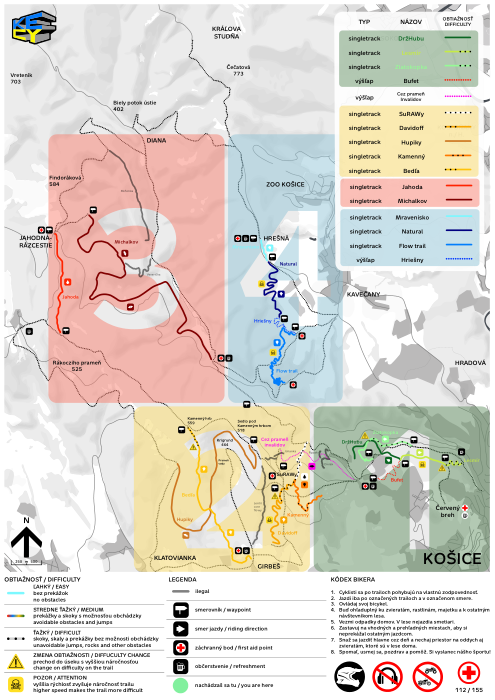
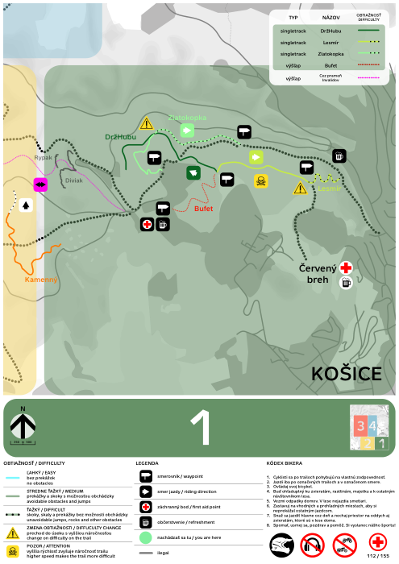
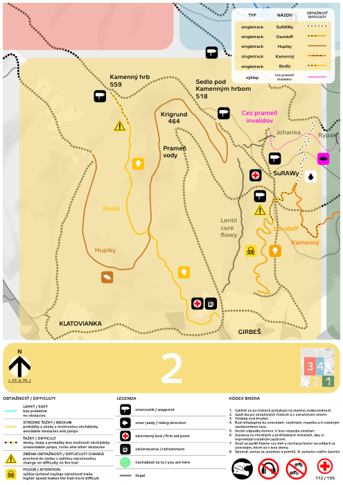
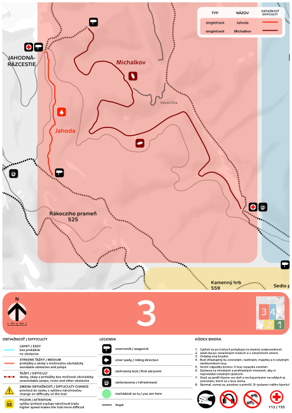
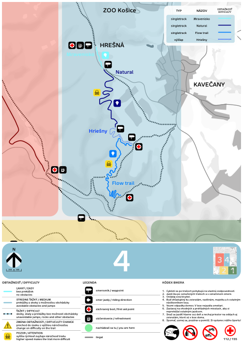

Stav projektu
Hotové / jasné
- ✔ Mapa celku a mapy 4 zón (PDF + PNG) → súbor
- ✔ Štartové tabule pre všetkých 16 trailov → súbor
- ✔ Smerovníky vľavo, vpravo a vpred pre 16 trailov (48 PDF) → súbor
- ✔ Tabule Koniec trailu, Protismer a Prechod medzi zónami → súbor
- ✔ Preklep Zlatokopka je v PDF značkách opravený → súbor
- ✔ GPS: 99 navrhovaných miest značenia v zónach 1–4, zoradených do priečinkov → súbor
- ✔ Pripomienky k mape od 7 členov, zoradené po osobách → súbor
- ✔ Princíp zón a farieb, kódy značenia (MC, MZ, T, SĽ, SP, SR, K, KP, !) → súbor
Čo treba dorobiť
Mapa a legenda
- Z1Z2 · zdroj
- Z2 · zdroj
- Z2Z3 · zdroj
- PaloG, Tomáš · zdroj
- Veronika · zdroj
- Peťo D. · zdroj
- úvod, Veronika, Tomáš · zdroj
- Z1 Gabi M., Peťo D., Veronika, Rišo · zdroj
- Z2 DK · zdroj
- Z2Z3 PaloG · zdroj
- PaloG, Tomáš · zdroj
- Z1Z2Z3Z4 Veronika, PaloG, Gabi M., DK · zdroj
- Z3 Gabi M. · zdroj
- Z2Z4 Tomáš · zdroj
- PaloG · zdroj
- Veronika, Tomáš · zdroj
- Z1Z2 Peťo D., Veronika · zdroj
Značky
- zistené z PDF · zdroj
- Z2 · zdroj
- Z2Z3 · zdroj
- Z4 Veronika · zdroj
- Zoran, PaloG, Tomáš · zdroj
- Zoran · zdroj
- Z1Z2 Veronika · zdroj
- Z1 Peťo D. · zdroj
Terén a GPS
Financie
Traily a ich tabule
Ku každému trailu sú zobrazené jeho tabule a počet tabúľ potrebných podľa GPS bodov. Klik na obrázok ho zväčší, odkaz otvorí PDF.
Zóna 1 zelená
DržHubu 3 na riešenie
| Štart | SĽ | SP | SV | Koniec |
|---|---|---|---|---|
| 1 | 4 | 4 | 2 | 0 |
- Na štartovej značke je „Medium“ s veľkým M, ostatné majú malé písmená.
- Štart na mape je ťažko nájsť (Peťo D.).
- Dokresliť prepojku na Bankov (Veronika).
Lesmír 2 na riešenie
| Štart | SĽ | SP | SV | Koniec |
|---|---|---|---|---|
| 1 | 2 | 4 | 2 | 0 |
- Na značke je len „Difficult“ po anglicky (Peťo D.).
- Dvojitá tabuľa na ČB nefunguje: ponechať smerovanie Lesmír → ČB, alebo smerovať na Huberta? (Rišo)
Zlatokopka 4 na riešenie
| Štart | SĽ | SP | SV | Koniec |
|---|---|---|---|---|
| 1 | 2 | 4 | 2 | 0 |
- V PDF značkách je názov už správne „Zlatokopka“. Preklep „Zlatoklopka“ na mape treba overiť.
- Križuje starší lokálny chodník, treba na to upozorniť (Rišo).
- Lavica na konci: označiť lavicu aj bezpečnú obchádzku (Rišo).
- Infotabuľa o prechode Zlatokopka ↔ DržHubu (Rišo).
Bufet 1 na riešenie
| Štart | SĽ | SP | SV | Koniec |
|---|---|---|---|---|
| 0 | 0 | 0 | 0 | 0 |
- Obojsmerný, alebo len výšľap? (Veronika)
Cez prameň invalidov 1 na riešenie
| Štart | SĽ | SP | SV | Koniec |
|---|---|---|---|---|
| 1 | 0 | 0 | 0 | 0 |
- Prechod medzi zónami je na mape rozpoznaný len približne.
Zóna 2 žltá
SuRAWy 1 na riešenie
| Štart | SĽ | SP | SV | Koniec |
|---|---|---|---|---|
| 2 | 10 | 4 | 1 | 1 |
- Na mape chýba „ý“ (Peťo D.).
Davidoff 3 na riešenie
| Štart | SĽ | SP | SV | Koniec |
|---|---|---|---|---|
| 2 | 8 | 3 | 2 | 1 |
- Chce 2 nástupy (Veronika).
- Začiatok flowtrailu dať ako ľahký? (Veronika)
- Doplniť časť Natural pod cestou (PaloG).
Hupiky 1 na riešenie
| Štart | SĽ | SP | SV | Koniec |
|---|---|---|---|---|
| 1 | 6 | 2 | 0 | 1 |
- Opraviť štart (vedľa LC Flowy alebo od aktuálnej smerovej tabule) (Tomáš).
Kamenný 4 na riešenie
| Štart | SĽ | SP | SV | Koniec |
|---|---|---|---|---|
| 2 | 7 | 4 | 1 | 1 |
- Štartová značka uvádza dĺžku 0 m, treba doplniť skutočnú dĺžku.
- Značka uvádza medium, legenda mapy difficult: treba rozhodnúť.
- Dokresliť prepojku na červenú magistrálu (Veronika).
- Posunúť zóny, aby bol celý v zóne 2 (PaloG).
Bedľa 3 na riešenie
| Štart | SĽ | SP | SV | Koniec |
|---|---|---|---|---|
| 1 | 4 | 2 | 4 | 1 |
- Rovnaká dĺžka ako Jahoda (2630 m): overiť.
- Chce 2 nástupy (Veronika).
- Prepojenie z konca na Bankov cez lúky, žltá cyklotrasa Sedlo → Jahodná (Veronika, DK).
Zóna 3 červená
Jahoda 2 na riešenie
| Štart | SĽ | SP | SV | Koniec |
|---|---|---|---|---|
| 1 | 0 | 3 | 0 | 1 |
- Rovnaká dĺžka ako Bedľa (2630 m): overiť.
- Na mape označiť ako obojsmerný trail, doplniť nadmorské výšky (Gabi M.).
Zóna 4 modrá
Mravenisko
| Štart | SĽ | SP | SV | Koniec |
|---|---|---|---|---|
| 1 | 1 | 0 | 1 | 1 |
Bez otvorených pripomienok.
Natural
| Štart | SĽ | SP | SV | Koniec |
|---|---|---|---|---|
| 1 | 2 | 2 | 2 | 1 |
Bez otvorených pripomienok.
Flow trail 1 na riešenie
| Štart | SĽ | SP | SV | Koniec |
|---|---|---|---|---|
| 2 | 2 | 2 | 2 | 1 |
- Súbor štartu je flowtrail.pdf, smerovníky sú „flow“.
Hriešny 3 na riešenie
| Štart | SĽ | SP | SV | Koniec |
|---|---|---|---|---|
| 1 | 2 | 4 | 2 | 0 |
- Na štartovej značke je medium, na mape bodkovaný výšľap: treba zjednotiť.
- Tabule začiatku sú zmätočné (celkový Hriešny + Mravenisko + Natural + Flow), pre výšľap tabuľa nie je (Veronika).
- Výšlap na Hrešnú: už sa nedá ísť na vrch lúky, treba ísť okolo pozemku (Tomáš).
Ciele bez vlastnej tabule (v GPS sa na ne smeruje)
Počty tabúľ (podklad pre cenovú ponuku)
Spočítané z obsahu GPS bodov v gps/nortysp-ke.cy-zona-2.kml. Trailové tabule sú priradené k zóne trailu, ostatné k zóne bodu. Body s ⚠ ešte nie sú rozhodnuté, preto sú to len orientačné počty.
| Zóna | Mapa celku | Mapa zóny | Štart | SĽ | SP | SV | Koniec | Protismer | Prechod zón | Križovanie | Zákaz | Výstraha |
|---|---|---|---|---|---|---|---|---|---|---|---|---|
| Z1 | 1 | 2 | 4 | 8 | 12 | 6 | 0 | 6 | 0 | 3 | 0 | 2 |
| Z2 | 3 | 7 | 8 | 35 | 15 | 8 | 5 | 8 | 4 | 10 | 7 | 0 |
| Z3 | 1 | 1 | 2 | 1 | 10 | 0 | 2 | 1 | 0 | 1 | 3 | 0 |
| Z4 | 3 | 4 | 5 | 7 | 8 | 7 | 3 | 1 | 0 | 2 | 1 | 0 |
Mapy










Ostatné značky a všetky smerovníky
Všetky smerovníky podľa smeru
Smerovníky vľavo (SĽ)


Smerovníky vpravo (SP)
Smerovníky vpred (SV / SR)
GPS body (99)
| # | Zóna | Kategória | Názov | Obsah | Poznámka | GPS |
|---|---|---|---|---|---|---|
| 1 | Z1 | Mapy (MC / MZ) | Mapa celku + smerovník na zelenú + žltú + červenú + modrú zónu? pôv.: | Mapa celku (MC) | ⚠ | 48.744238,21.209191 |
| 2 | Z1 | Začiatky trailov (T) | Začiatok trailu Zlatokopka + Mapa zóny + Smerovník vpravo Lesmír + Smerovník vpravo DržHubu pôv.: Začiatok trailu Zlatoklopka + Mapa zóny + Smerovník vpravo Lesmír + Smerovník vpravo DržHuba | Mapa zóny 1 (MZ1) Začiatok trailu: Zlatokopka Smerovník vpravo: Lesmír Smerovník vpravo: DržHubu | 48.747362,21.212476 | |
| 3 | Z1 | Začiatky trailov (T) | Začiatok trailu DržHubu + Lesmír + Mapa zóny pôv.: Začiatok trailu DržHuba + Lesmír + Mapa zóny | Mapa zóny 1 (MZ1) Začiatok trailu: DržHubu Začiatok trailu: Lesmír | 48.747377,21.219319 | |
| 4 | Z1 | Začiatky trailov (T) | Začiatok trailu Prameň invalidov pôv.: | Začiatok trailu: Prameň invalidov | 48.744444,21.208489 | |
| 5 | Z1 | Smerovníky (SĽ / SP / SR-SV) | SV DržHubu + Zlatokopka + Lesmír pôv.: SV DržHuba + Zlatoklopka + Lesmír | Smerovník vpred: DržHubu Smerovník vpred: Zlatokopka Smerovník vpred: Lesmír | 48.744958,21.210692 | |
| 6 | Z1 | Smerovníky (SĽ / SP / SR-SV) | Smerovník vpravo Lesmír + Smerovník vpravo DržHubu + Smerovník vľavo Zlatokopka pôv.: Smerovník vpravo Lesmír + Smerovník vpravo DržHuba + Smerovník vľavo Zlatoklopka | Smerovník vpravo: Lesmír Smerovník vpravo: DržHubu Smerovník vľavo: Zlatokopka | 48.748055,21.213290 | |
| 7 | Z1 | Smerovníky (SĽ / SP / SR-SV) | Smerovník vľavo Lesmír + Smerovník vľavo DržHubu + Smerovník vľavo Zlatokopka pôv.: Smerovník vľavo Lesmír + Smerovník vľavo DržHuba + Smerovník vľavo Zlatoklopka | Smerovník vľavo: Lesmír Smerovník vľavo: DržHubu Smerovník vľavo: Zlatokopka | 48.746795,21.212491 | |
| 8 | Z1 | Smerovníky (SĽ / SP / SR-SV) | Smerovník vľavo Lesmír + Smerovník vľavo DržHubu + Smerovník vpravo Zlatokopka pôv.: Smerovník vľavo Lesmír + Smerovník vľavo DržHuba + Smerovník vpravo Zlatoklopka | Smerovník vľavo: Lesmír Smerovník vľavo: DržHubu Smerovník vpravo: Zlatokopka | 48.747988,21.214730 | |
| 9 | Z1 | Smerovníky (SĽ / SP / SR-SV) | SP Zlatokopka + SĽ DržHubu + protismer pôv.: SP Zlatoklopka + SĽ DržHuba + protismer | Smerovník vpravo: Zlatokopka Smerovník vľavo: DržHubu Protismer | 48.750251,21.212530 | |
| 10 | Z1 | Smerovníky (SĽ / SP / SR-SV) | SV Zlatokopka + SĽ DržHubu + protismer pôv.: SV Zlatoklopka + SĽ DržHuba + protismer | Smerovník vpred: Zlatokopka Smerovník vľavo: DržHubu Protismer | 48.750136,21.212238 | |
| 11 | Z1 | Smerovníky (SĽ / SP / SR-SV) | Vpravo DržHubu + Zlatokopka + Lesmír pôv.: Vpravo Držhuba + Zlatoklopka + Lesmír | Smerovník vpravo: DržHubu Smerovník vpravo: Zlatokopka Smerovník vpravo: Lesmír | 48.746409,21.233839 | |
| 12 | Z1 | Smerovníky (SĽ / SP / SR-SV) | Smerovník vpravo Zlatokopka + DržHubu + Lesmír pôv.: Smerovník vpravo Zlatoklopka + DržHuba + Lesmír | Smerovník vpravo: Zlatokopka Smerovník vpravo: DržHubu Smerovník vpravo: Lesmír | 48.749288,21.222709 | |
| 13 | Z1 | Smerovníky (SĽ / SP / SR-SV) | SV Lesmír + SV DržHubu pôv.: SV Lesmír + SV DržHUbu | Smerovník vpred: Lesmír Smerovník vpred: DržHubu | 48.747531,21.217673 | |
| 14 | Z1 | Križovania | Pozor križovanie + protismer+ SVpred pôv.: | Smerovník vpred Protismer Križovanie Upozornenie: Pozor | 48.748279,21.215168 | |
| 15 | Z1 | Konce trailov a protismer (K / KP) | Koniec trailu + protismer pôv.: | Koniec trailu Protismer | 48.747395,21.209123 | |
| 16 | Z1 | Konce trailov a protismer (K / KP) | Koniec trailu + protismer + Spomaľ križovanie pôv.: | Koniec trailu Protismer Križovanie Upozornenie: Spomaľ | 48.746457,21.233585 | |
| 17 | Z1 | Konce trailov a protismer (K / KP) | Koniec trailu + protismer + križovanie pôv.: | Koniec trailu Protismer Križovanie | 48.749338,21.222648 | |
| 18 | Z2 | Mapy (MC / MZ) | MZ2 pôv.: | Mapa zóny 2 (MZ2) | ⚠ SP Lesmír, SĽ Hriešny ? | 48.749907,21.198477 |
| 19 | Z2 | Mapy (MC / MZ) | Altánok pod vedením: MC, SP SuRAWy,SP Kamenný,SP Davidoff / SĽ Bedľa, SĽ Hupiky pôv.: Altanok pod vedenim: MC, SPSurawy,SPKamenny,SPDavidoff / SLBedla, SLHupiky | Mapa celku (MC) Smerovník vpravo: SuRAWy Smerovník vpravo: Kamenný Smerovník vpravo: Davidoff Smerovník vľavo: Bedľa Smerovník vľavo: Hupiky | ⚠ SĽ Jahoda, SĽ Michalkov - alebo značka na Zónu3? | 48.744645,21.193002 |
| 20 | Z2 | Mapy (MC / MZ) | MZ2, SĽ SuRAWy, SĽ Kamenný, SĽ Davidoff pôv.: MZ2, SLSurawy, SLKamenny, SL Davidoff | Mapa zóny 2 (MZ2) Smerovník vľavo: SuRAWy Smerovník vľavo: Kamenný Smerovník vľavo: Davidoff | ⚠ Navigujeme aj na Zónu 1 a 3 ? | 48.732273,21.186141 |
| 21 | Z2 | Prechody medzi zónami | MC, SĽ SuRAWy,Davidoff,Kammenny, Z1→Z2 pôv.: MC, SLSurway,Davidoff,Kammenny, Z1->Z2 | Mapa celku (MC) Smerovník vľavo: SuRAWy Smerovník vľavo: Davidoff Prechod medzi zónami: zóna 1 → zóna 2 | 48.741696,21.201960 | |
| 22 | Z2 | Prechody medzi zónami | MZ2, Zóna 1 → Zóna 2 - treba ju tu? pôv.: MZ2, Zona 1 -> Zona 2 - treba ju tu? | Mapa zóny 2 (MZ2) Prechod medzi zónami: zóna 1 → zóna 2 | ⚠ | 48.747139,21.199696 |
| 23 | Z2 | Prechody medzi zónami | Zóna 1 → Zóna 2 ? pôv.: Zona 1 -> Zona 2 ? | Prechod medzi zónami: zóna 1 → zóna 2 | ⚠ | 48.743202,21.201752 |
| 24 | Z2 | Prechody medzi zónami | SP Jahoda, SP Michalkov pôv.: SPJahoda, SP Michalkov | Mapa celku (MC) Smerovník vpravo: Jahoda Smerovník vpravo: Michalkov Prechod medzi zónami: zóna 2 → zóna 3 | MC, Prechod Zóna 2 → Zóna 3 | 48.751961,21.171674 |
| 25 | Z2 | Začiatky trailov (T) | Start SuRAWy, Kamenný, Davidoff pôv.: Start Surway, Kammeny, Davidoff | Mapa zóny 2 (MZ2) Začiatok trailu: SuRAWy Začiatok trailu: Kamenný Začiatok trailu: Davidoff Tabuľa trailu: SuRAWy Tabuľa trailu: Kamenný Tabuľa trailu: Davidoff Smerovník vpravo: Davidoff Smerovník vľavo: Kamenný Križovanie (2×) | MZ2, TSuRAWy, TKamenný, TDavidoff, SP Davidoff, SĽ Kamenný, 2xKrižovanie | 48.744514,21.196153 |
| 26 | Z2 | Začiatky trailov (T) | StartHupiky pôv.: | Začiatok trailu: Hupiky | 48.745740,21.186896 | |
| 27 | Z2 | Začiatky trailov (T) | StartBedľa pôv.: StartBedla | Začiatok trailu: Bedľa | 48.751799,21.171699 | |
| 28 | Z2 | Smerovníky (SĽ / SP / SR-SV) | SĽ SuRAWy + SV Výšlap pôv.: SLSurawy + SV Výšlap | Smerovník vľavo: SuRAWy Smerovník vpred: Výšlap | 48.748479,21.196689 | |
| 29 | Z2 | Smerovníky (SĽ / SP / SR-SV) | SP SuRAWy pôv.: SPSurway | Smerovník vpravo: SuRAWy | 48.746536,21.195629 | |
| 30 | Z2 | Smerovníky (SĽ / SP / SR-SV) | SĽ SuRAWy pôv.: SLSurway | Smerovník vľavo: SuRAWy | 48.745801,21.196507 | |
| 31 | Z2 | Smerovníky (SĽ / SP / SR-SV) | SĽ SuRAWy, SĽ Kamenný, SĽ Davidoff pôv.: SLSurawy, SL Kamenný, SL Davidoff | Smerovník vľavo: SuRAWy Smerovník vľavo: Kamenný Smerovník vľavo: Davidoff | ⚠ Alebo len šípka vľavo | 48.744089,21.196522 |
| 32 | Z2 | Smerovníky (SĽ / SP / SR-SV) | SĽ Davidoff, SP Bedľa, SP Jahoda, SP Michalkov, SP Hupiky, SP Kamenný, SP SuRAWy pôv.: SLDavidoff, SP Bedľa, SPJahoda, SP Michalkov, SP Hupiky, SP Kamenný, SP SuraWY | Smerovník vľavo: Davidoff Smerovník vpravo: Bedľa Smerovník vpravo: Jahoda Smerovník vpravo: Michalkov Smerovník vpravo: Hupiky Smerovník vpravo: Kamenný Smerovník vpravo: SuRAWy | ⚠ SĽ Lesmír - alebo značka na Zónu1? / SP Jahoda, SP Michalkov - alebo značka na Zónu3? | 48.742825,21.193218 |
| 33 | Z2 | Smerovníky (SĽ / SP / SR-SV) | SR Davidoff pôv.: SRDavidoff | Smerovník vpred: Davidoff | ⚠ zákaz peším ? | 48.742389,21.193093 |
| 34 | Z2 | Smerovníky (SĽ / SP / SR-SV) | SP Kamenný pôv.: SPKamenny | Smerovník vpravo: Kamenný | 48.741966,21.197221 | |
| 35 | Z2 | Smerovníky (SĽ / SP / SR-SV) | SĽ Bedľa, SĽ Hupiky pôv.: SLBedla, SLHupiky | Smerovník vľavo: Bedľa Smerovník vľavo: Hupiky | SĽ Zóna 3 | 48.745906,21.190761 |
| 36 | Z2 | Smerovníky (SĽ / SP / SR-SV) | SĽ Hupiky, SP Bedľa,MZ2 pôv.: SLHupiky, SPBedla,MZ2 | Mapa zóny 2 (MZ2) Smerovník vľavo: Hupiky Smerovník vpravo: Bedľa | ⚠ SĽ Jahoda, SĽ Michalkov - alebo značka na Zónu3? | 48.747647,21.187682 |
| 37 | Z2 | Smerovníky (SĽ / SP / SR-SV) | SR Bedľa pôv.: SRBedla | Smerovník vpred: Bedľa | ⚠ SR Jahoda, SR Michalkov resp. len značka na zónu 3? | 48.751141,21.182817 |
| 38 | Z2 | Smerovníky (SĽ / SP / SR-SV) | SĽ Hupiky, SR Kamenný, Davidoff, SuRAWy pôv.: SLHupiky, SR Kamenný, Davidoff, SuraWy | Smerovník vľavo: Hupiky Smerovník vpred: Kamenný Smerovník vpred: Davidoff Smerovník vpred: SuRAWy | 48.743230,21.187886 | |
| 39 | Z2 | Smerovníky (SĽ / SP / SR-SV) | SĽ SuRAWy, SĽ Hupiky, SĽ Bedľa, SĽ Davidoff, SĽ Kamenný pôv.: SLSurawy, SL Hupiky, SL Bedla, SL Davidoff, SLKamenný | Smerovník vľavo: SuRAWy Smerovník vľavo: Hupiky Smerovník vľavo: Bedľa Smerovník vľavo: Davidoff Smerovník vľavo: Kamenný | ⚠ SP Lesmír - alebo značka na Zónu1? / SĽ Jahoda, SĽ Michalkov - alebo značka na Zónu3? | 48.743419,21.193169 |
| 40 | Z2 | Smerovníky (SĽ / SP / SR-SV) | SĽ SuRAWy,SĽ Kamenný, SĽ Davidoff pôv.: SLSurway,SLKamenny, SL Davidoff | Smerovník vľavo: SuRAWy Smerovník vľavo: Kamenný Smerovník vľavo: Davidoff | ⚠ SR Lesmír ? Navádzame aj na zónu 1? | 48.734848,21.189681 |
| 41 | Z2 | Smerovníky (SĽ / SP / SR-SV) | SP SuRAWy, SP Kamenný, SP Davidoff pôv.: SPSurawy, SPKamenny, SP Davidoff | Smerovník vpravo: SuRAWy Smerovník vpravo: Kamenný Smerovník vpravo: Davidoff | 48.735445,21.192801 | |
| 42 | Z2 | Smerovníky (SĽ / SP / SR-SV) | SĽ SuRAWy,SĽ Kamenný, SĽ Davidoff pôv.: SLSurway,SLKamenny, SL Davidoff | Smerovník vľavo: SuRAWy Smerovník vľavo: Kamenný Smerovník vľavo: Davidoff | 48.735164,21.194217 | |
| 43 | Z2 | Smerovníky (SĽ / SP / SR-SV) | SĽ SuRAWy, SĽ Kamenný, SĽ Davidoff, SĽ Bedľa, SĽ Hupiky pôv.: SLSurway, SLKamenny, SLDavidoff, SL Bedľa, SL Hupiky | Smerovník vľavo: SuRAWy Smerovník vľavo: Kamenný Smerovník vľavo: Davidoff Smerovník vľavo: Bedľa Smerovník vľavo: Hupiky | ⚠ SĽ na zónu 3? | 48.748982,21.192189 |
| 44 | Z2 | Križovania | Križovanie, Protismer, zákaz pôv.: Krizenie, Protismer, zakaz | Protismer Zákazová značka Križovanie | Kvôli koňom | 48.739067,21.190995 |
| 45 | Z2 | Križovania | Križovanie + protismer a zákaz pôv.: Krizovanie + protismer a zákaz | Protismer Zákazová značka Križovanie | 48.748357,21.196408 | |
| 46 | Z2 | Križovania | Križovanie SuRAWy x Červená + protismer + Zákaz pôv.: Krizenie Surawy x Cervena + protismer + Zákaz | Protismer Zákazová značka Križovanie | 48.746582,21.196021 | |
| 47 | Z2 | Križovania | Križovanie Davidoff x Cyklo, Protismer a zákazové tabule pôv.: Krizenie Davidoff x Cyklo, Protismer a zákazové tabule | Protismer Zákazová značka Križovanie | 48.742973,21.193381 | |
| 48 | Z2 | Križovania | Križovanie, Protismer Kamenný x Cesta pôv.: Krizenie, Protismer Kamenny x Cesta | Protismer Križovanie | Zakazová značka, SĽ Kamenný | 48.742008,21.197125 |
| 49 | Z2 | Križovania | Križovanie,Protismer, Zákaz. značka, SR Bedľa pôv.: Krizovanie,Protismer, Zákaz. značka, SR Bedla | Smerovník vpred: Bedľa Protismer Zákazová značka Križovanie | 48.749357,21.173808 | |
| 50 | Z2 | Križovania | Križovanie, SR Bedľa, SP Hupiky pôv.: Krizovanie, SRBedla, SPHupiky | Smerovník vpred: Bedľa Smerovník vpravo: Hupiky Križovanie | Protismer pre Bedľu + zákazová tabuľa | 48.739441,21.176849 |
| 51 | Z2 | Križovania | Križovanie, SR Bedľa pôv.: Krizenie, SRBedla | Smerovník vpred: Bedľa Križovanie | ⚠ Alebo Koniec oficiálneho trailu ? | 48.732518,21.181827 |
| 52 | Z2 | Konce trailov a protismer (K / KP) | KSuRAWy, Križovanie pôv.: KSurway, Krizenie | Koniec trailu: SuRAWy Križovanie | 48.749856,21.198407 | |
| 53 | Z2 | Konce trailov a protismer (K / KP) | Koniec Davidoff, Zákazová tabuľa, Protismer, MZ2, SĽ SuRAWy pôv.: Koniec Davidoff, Zákazová tabula, Protismer, MZ2, SLSurawy | Mapa zóny 2 (MZ2) Smerovník vľavo: SuRAWy Koniec trailu: Davidoff Protismer Zákazová značka | 48.735379,21.188804 | |
| 54 | Z2 | Konce trailov a protismer (K / KP) | Koniec Kamenný + Protismer + Zákazová značka pôv.: Koniec Kamenny + Protismer + Zákazová značka | Koniec trailu: Kamenný Protismer Zákazová značka | 48.741761,21.201730 | |
| 55 | Z2 | Konce trailov a protismer (K / KP) | KPBedľa pôv.: KPBedla | Koniec trailu: Bedľa | 48.732322,21.186043 | |
| 56 | Z2 | Konce trailov a protismer (K / KP) | Koniec Hupiky, SP Jahoda, SP Michalkov, MZ2 pôv.: | Mapa zóny 2 (MZ2) Smerovník vpravo: Jahoda Smerovník vpravo: Michalkov Koniec trailu: Hupiky | ⚠ SĽ SuRAWy? / Prechod Zóna 2 → Zóna 3 ? | 48.746057,21.168936 |
| 57 | Z2 | Výstrahy (!) | Nebezpečný úsek pôv.: Nebezpecny usek | Prepad 1 | 48.746214,21.196160 | |
| 58 | Z2 | Výstrahy (!) | Nebezpečný úsek pôv.: Nebezpecny usek | Skala | 48.739909,21.200291 | |
| 59 | Z3 | Mapy (MC / MZ) | MZ / SP Michalkov pôv.: MZ / SP Michalkov | Mapa zóny 3 (MZ3) Smerovník vpravo: Michalkov | ⚠ Smerovka na zónu 4? | 48.781254,21.141165 |
| 60 | Z3 | Začiatky trailov (T) | MC / Start Jahoda pôv.: | Mapa celku (MC) Začiatok trailu: Jahoda | 48.766304,21.142492 | |
| 61 | Z3 | Začiatky trailov (T) | Začiatok trailu Michalkov / Smerovník obojsmerný pôv.: | Začiatok trailu: Michalkov Smerovník obojsmerný | 48.782637,21.150160 | |
| 62 | Z3 | Smerovníky (SĽ / SP / SR-SV) | SR pôv.: | Smerovník vpred (trail nedoplnený) | 48.772828,21.143307 | |
| 63 | Z3 | Smerovníky (SĽ / SP / SR-SV) | SĽ pôv.: | Smerovník vľavo (trail nedoplnený) | 48.777325,21.142556 | |
| 64 | Z3 | Smerovníky (SĽ / SP / SR-SV) | SP Michalkov pôv.: SP Michalkov | Smerovník vpravo: Michalkov | 48.782289,21.142106 | |
| 65 | Z3 | Smerovníky (SĽ / SP / SR-SV) | SP Michalkov pôv.: | Smerovník vpravo: Michalkov | 48.783821,21.149293 | |
| 66 | Z3 | Smerovníky (SĽ / SP / SR-SV) | SP Michalkov (zhora smer) / SĽ Michalkov (zdola smer) pôv.: SP Michalkov (zhora smer) / SL Michalkov (zdola smer) | Smerovník vpravo: Michalkov Smerovník vľavo: Michalkov | 48.778246,21.149162 | |
| 67 | Z3 | Smerovníky (SĽ / SP / SR-SV) | SP pôv.: | Smerovník vpravo (trail nedoplnený) | 48.776633,21.156725 | |
| 68 | Z3 | Križovania | Križovanie + zákaz. značka pôv.: | Zákazová značka Križovanie | 48.775239,21.151710 | |
| 69 | Z3 | Konce trailov a protismer (K / KP) | Koniec Jahoda / Protismer / Zákazová značka pôv.: | Koniec trailu: Jahoda Protismer Zákazová značka | 48.780987,21.141321 | |
| 70 | Z3 | Konce trailov a protismer (K / KP) | Koniec Michalkov + zákaz. značka pôv.: | Koniec trailu: Michalkov Zákazová značka | 48.768178,21.171201 | |
| 71 | Z4 | Mapy (MC / MZ) | MC, SR Hriešny, SĽ Hriešny Flow pôv.: MC, SRHriesny, SLHriesnyFlow | Mapa celku (MC) Smerovník vpred: Hriešny Smerovník vľavo: Hriešny Flow | existujúca tyčka | 48.769185,21.205448 |
| 72 | Z4 | Mapy (MC / MZ) | MC Hresna pôv.: | Mapa celku (MC) | pridať k turistickým mapám aj tu našu | 48.779858,21.188264 |
| 73 | Z4 | Mapy (MC / MZ) | MC Alpinka pôv.: | Mapa celku (MC) | pridať k turistickým mapám aj tu našu | 48.760296,21.180958 |
| 74 | Z4 | Začiatky trailov (T) | MZ4, Start SR Hriešny Mravenisko pôv.: MZ4, Start SRHriesnyMravenisko | Mapa zóny 4 (MZ4) Začiatok trailu: Hriešny Mravenisko Smerovník vpred: Hriešny Mravenisko | existujúca tyčka | 48.779508,21.188138 |
| 75 | Z4 | Začiatky trailov (T) | MZ4, Start SP Hriešny Natural pôv.: MZ4, Start SPHriesnyNatural | Mapa zóny 4 (MZ4) Začiatok trailu: Hriešny Natural Smerovník vpravo: Hriešny Natural | existujúca tyčka | 48.776513,21.190088 |
| 76 | Z4 | Začiatky trailov (T) | MZ4, Start SR Hriešny Výšlap, SR Hriešny Flow pôv.: MZ4, Start SRHriesnyVyslap, SRHriesnyFlow | Mapa zóny 4 (MZ4) Začiatok trailu: Hriešny Výšlap Začiatok trailu: Hriešny Flow Smerovník vpred: Hriešny Výšlap Smerovník vpred: Hriešny Flow | start výšlapu aktuálne neoznačený | 48.768453,21.192248 |
| 77 | Z4 | Začiatky trailov (T) | MZ4, Start SR Hriešny Flow pôv.: MZ4, Start SRHriesnyFlow | Mapa zóny 4 (MZ4) Začiatok trailu: Hriešny Flow Smerovník vpred: Hriešny Flow | 48.765887,21.195697 | |
| 78 | Z4 | Smerovníky (SĽ / SP / SR-SV) | SP Hriešny Natural,SĽ Hriešny Mravenisko pôv.: SPHriesnyNatural,SLHriesnyMravenisko | Smerovník vpravo: Hriešny Natural Smerovník vľavo: Hriešny Mravenisko | ⚠ alebo ako uz mame iba SR Hriešny Natural | 48.777501,21.189220 |
| 79 | Z4 | Smerovníky (SĽ / SP / SR-SV) | SR Hriešny Natural pôv.: SRHriesnyNatural | Smerovník vpred: Hriešny Natural | stĺpik medzi cestami, ukazuje na ďalší smerovník | 48.777130,21.189360 |
| 80 | Z4 | Smerovníky (SĽ / SP / SR-SV) | SĽ Hriešny Natural pôv.: SLHriesnyNatural | Smerovník vľavo: Hriešny Natural | možno v tejto časti budu stačiť 2 smerovníky | 48.776784,21.189534 |
| 81 | Z4 | Smerovníky (SĽ / SP / SR-SV) | SĽ Hriešny Flow pôv.: SLHriesnyFlow | Smerovník vľavo: Hriešny Flow | 48.767916,21.191226 | |
| 82 | Z4 | Smerovníky (SĽ / SP / SR-SV) | SP Hriešny Flow pôv.: SPHriesnyFlow | Smerovník vpravo: Hriešny Flow | koniec hornej časti flowu (loop) | 48.766609,21.193614 |
| 83 | Z4 | Smerovníky (SĽ / SP / SR-SV) | SĽ Hriešny, SP Alpinka pôv.: SLHriesny, SPAlpinka | Smerovník vľavo: Hriešny Smerovník vpravo: Alpinka | 48.758839,21.193058 | |
| 84 | Z4 | Smerovníky (SĽ / SP / SR-SV) | SP Hriešny pôv.: | Smerovník vpravo: Hriešny | ⚠ + Značka SP zóna 1-3? | 48.758204,21.192114 |
| 85 | Z4 | Smerovníky (SĽ / SP / SR-SV) | SĽ Alpinka pôv.: SLAlpinka | Smerovník vľavo: Alpinka | ⚠ Značka SP zóna 1-3? | 48.759033,21.189294 |
| 86 | Z4 | Smerovníky (SĽ / SP / SR-SV) | SP Hriešny Flow pôv.: SPHriesnyFlow | Smerovník vpravo: Hriešny Flow | 48.759566,21.188663 | |
| 87 | Z4 | Smerovníky (SĽ / SP / SR-SV) | SĽ Alpinka pôv.: SLAlpinka | Smerovník vľavo: Alpinka | ⚠ Značka SP zóna 1-3? | 48.761392,21.186968 |
| 88 | Z4 | Smerovníky (SĽ / SP / SR-SV) | SP Alpinka pôv.: SPAlpinka | Smerovník vpravo: Alpinka | ⚠ Značka SP zóna 1-3? | 48.759040,21.186144 |
| 89 | Z4 | Smerovníky (SĽ / SP / SR-SV) | SĽ Bankov, koniec zóny 4 pôv.: SLBankov, koniec zony4 | Smerovník vľavo: Bankov | ⚠ Značka na SĽ Zóna 1 a 2? | 48.762235,21.177162 |
| 90 | Z4 | Smerovníky (SĽ / SP / SR-SV) | SP Hriešny? zóna 4 pôv.: SPHriesny? zona4 | Smerovník vpravo: Hriešny | ⚠ | 48.796580,21.159510 |
| 91 | Z4 | Smerovníky (SĽ / SP / SR-SV) | SP Hriešny? zóna 4 pôv.: SPHriesny? zona4 | Smerovník vpravo: Hriešny | ⚠ | 48.785700,21.165140 |
| 92 | Z4 | Smerovníky (SĽ / SP / SR-SV) | SP Hriešny? zóna 4 pôv.: SPHriesny? zona4 | Smerovník vpravo: Hriešny | ⚠ | 48.762844,21.178979 |
| 93 | Z4 | Križovania | Križovanie cesty, SR Hriešny Natural pôv.: Krizenie cesty, SRHriesnyNatural | Smerovník vpred: Hriešny Natural Križovanie | 48.774917,21.190324 | |
| 94 | Z4 | Križovania | Križovanie cesty, SĽ Hriešny Natural pôv.: Krizenie cesty, SLHriesnyNatural | Smerovník vľavo: Hriešny Natural Križovanie | trail sa počas križovania točí doľava, na fotke osvetlené pokračovanie | 48.772479,21.189655 |
| 95 | Z4 | Konce trailov a protismer (K / KP) | KMravenisko pôv.: | Koniec trailu: Mravenisko | koniec sekcie, z druhej strany protismer | 48.777507,21.189130 |
| 96 | Z4 | Konce trailov a protismer (K / KP) | KNatural, SĽ Hriešny Výšlap/Flow pôv.: KNatural, SLHriesnyVyslap/Flow | Smerovník vľavo: Hriešny Výšlap/Flow Koniec trailu: Natural | existujúca tyčka na zlom mieste | 48.768861,21.191952 |
| 97 | Z4 | Konce trailov a protismer (K / KP) | KFlow + protismer + zákaz. tabuľa pôv.: KFlow + protismer + zákaz. tabula | Koniec trailu: Flow Protismer Zákazová značka | 48.758843,21.192872 | |
| 98 | Z4 | Výstrahy (!) | Potok pôv.: | 48.772446,21.190773 | ||
| 99 | Z4 | Výstrahy (!) | Gap pôv.: | momentálne nie je označený | 48.760824,21.190718 |
Dokumenty (.md)
Obsah projektových .md súborov. Každý sa dá rozbaliť, odkaz otvorí originál.
ke.cy znacenie-facebook message.md otvoriť
KE.CY znacenie - Pripnuté správy ku komunikacii
📌 Postup prieskumu zóny
Ďakujem že ste sa priradili ku zónam. Posielam kratku predstavu ako by mal byt urobeny prieskum zony a navrh miest kde ma byt aka tabulka a na zaver z tohto navrhu vypadne pocet. Ku navrhu je potrebne pozriet mapu zony a zaznacit do nej:
- Mapu celok - "kecy celok.pdf"
- Mapu zóny - tú štandardne na začiatok trailu "zona 1.pdf", "zona 2.pdf", "zona 3.pdf", "zona 4.pdf"
- Začiatok trailu
- Koniec trailu "koniec.pdf" + protismer "protismer.pdf"
- Smerovníky vpravo, vľavo, vpred
- "smerovníky vlavo"
- "smerovniky vpravo"
- "smerovniky vpred"
- Výstražné pred náročným úsekom (ešte nemáme, ale nechám urobiť)
📷 Obhliadka terénu
Následne presť si terén a urobiť fotku miesta, kde bude označenie osadené. Pri tomto treba brať ohľad na:
- ostatné funkcie miesta (hospodársku aby nezavadzalo pri ťažbe…)
- nech nie je v kríku alebo pod stromom a v lete zarastie a zníži viditeľnosť
- mala by byť na pravej strane cesty cestičky
- po konci trailu smerovka na návrat na traily (tu asi budeme potrebovat nejakú všeobecnú tabuľku nech len určí smer…a pod.)
🏷️ Označenie miest na mape
Miesta umiestnenia tabuľky prosím označte "kódom" na mape a pridajte popis o akú tabuľku ide.
VZOR:
| Kód | Význam |
|---|---|
| MC | mapa celok |
| MZ1 | mapa zóny 1 |
| TLesmír | trail |
| SĽLesmír | smerovka ľavá Lesmír |
| SPLesmír | smerovka pravá Lesmír |
| SRLesmír | smerovka rovno Lesmír |
| ! | výstraha na trailoch |
| KP | koniec/protismer |
💬 Komuniakacie
Zoran • 22. 10. 2025
Aby to malo nejaky ramec. Navrhujem, aby sme dali dokopy pripomienky ku mape, zmeny, opravy a dajme si na to termín PIATOK 24.10. Potom sa stretnem s grafikom a urobí zmeny podla zoznamu.
Zoran • 22. 10. 2025
tu je všetko čo máme: https://drive.google.com/drive/folders/105MVWisM3bVGS8N16Mv1hpbdmM4occks?usp=sharing
2025 - Google Drive drive.google.com
Zoran • 22. 10. 2025
Úloha je nasledovná: musíme vytipovať miesta kde osadíme akú značku a akým spôsobom, kde osadíme mapu veľkú a kde podrobné. To nám dá podklad pre cenovú ponuku výroby a osadenia a potom môžem na to zháňať peniaze.
Zoran • 22. 10. 2025
máme k dispozícii: Hlavnú mapu, detailnejšie mapy jednotlivých zón, označenie prechodu medzi zónami, smerovníky ku trailom (lavo, pravo a rovno), start trailu, koniec trailu a protismer
Zoran • 22. 10. 2025
Základ dizajnu je ten, že sme rozdelili KECY do zón pre lepšiu orientáciu. Každá zóna má svoju základnú farbu a Traily v zónach majú svoje farebné označenie farbou, ktorá je odtieňom tej základnej farby celej zóny. Zóny majú aj svoje čísla. Na kľúčových bodoch by sme umiestnili mapy celku a potom v rámci zóny len podrobnú mapu zóny. Pri prechode medzi zónami by sme označili smerovníky s grafickou informáciou že biker prechádza do inej zóny na "hlavných ťahoch".
mesenger-vystupy/Upravy mapy.md otvoriť
Tu prosím spíšte nedostatky na mape:
Chybajuci popis: Alpinka, Jahodna, Bankov, Ovecka
Preklep : Zlatokopka
DK:
- Girbes bistro už zaniklo
- Zo sedla pod kamennym hrbom zaznačiť kadial vedie zlta turisticka ku Bedli
Gabi M.
3.cervena:
JAHODA: myslim, ze znacena je dostatocne, pridat mozno na mapu obojsmerne sipky a nadm.vysky. V terene max.jednu sipku pri výjazde z polneho parkoviska v poslednej tretine, aby sa trafilo medzi stromy na pokračovanie.
Podla mna by mala aj na mape byt oznacena ako obojsmerny trail, kedze v teréne je oznacena ako "C" obojsmerne na stromoch. A jazdi sa o obojsmerne ako najkrajsi výjazd na Jahodnu cez Michalkov.
MICHALKOV: opat nadmorské výšky začiatku a konci. Znacit ho ako obojsmerny!!! V ramci nadväzovania na seba, by mozno stalo za uvahu ho na mape oznacit uz od "Psieho cintorina", nech tam nie je mŕtvych par 100m. Ale nemusi, vidno, ze je tam nejaky transfer.
*** (Riso-poznamka: oproti psiemu cintorinu ako vstupujes zvaznicou do lesa smer Michalkov bola kedysi infotabula na stlpe, neskor po zniceni stlpa na strome — je tam este? Nanovo nainstalovat?)
MIŇONKA: nadm.vysky, sipky smeru, obtiažnosť.
A mozno tenkú linku naznacit, ze z konca Minonky sa da priamo na koniec Veverice dostat.
VEVERIČKA: nadm.vysky, smer jazdy.
All good.
Celkovo mozno len ikonkami:
- Smrtky, vykricniky, kde je tazky usek,
- Ikonka "modrej kvapky", kde je prameň, voda a pod.
- Vychodzie body "P" pre parkoviska (Jahodna, Bankov, Alpinka a pod.)
Zatial asi tolko odo mna s rezervou. Len napady.
Peťo D.
- Pramene a studničky - ako Gabi
- Zakaz peším - nie je to ani na hlavnej mape spomenuté, ani piktogram zákazu peším, otazne je či by malo zmysel to dávať na križovania alebo konce trailov (zóna 1 hlavne)
- Žltá a červená turistická značka|cykloznacky - na jednej strane možno zbytočne info na mape a zahlti ju to , ale možno dobre pre orientáciu (viem že na jahodu idem po červenej) - tu ale mám pochybnosti
- Parkovisko - Gabi to načrtol
- štart\ciel trailov na mape ako spomínal Peťo, na drzhubu som chvíľu pozeral a rozmýšľal kde je štart, smerovu šípku som si všimol až neskôr
- surawý, zlatokopka - Zlatoklopka je napísaná všade zle, nie len na mape ale aj na smerovnikoch, pri surawom mi chýba ý, keď už inde diakritika je
- nekonzistentné značenie obtiažnosti, niekde len v EN, niekde aj v SK, Surawy na napr. Ťažký \ difficult, Lesmir má len difficult napísané, pôsobí tu rušivo ked to je takto pokope
Veronika:
- Označenie obtiažnosti nie je jasné. Ťažký je bodkami. Stredne ťažký rovná čiara. Ľahký tiež rovná čiara. Treba vymyslieť ako ich rozlíšiť, pomlčky alebo vlnovka…
- Doplniť vyznačenie prepojenia z konca Bedle smerom na Bankov cez lúky
- Výšlap by sme mohli preložiť v legende do angličtiny
- Zlatoklopka - je preklep v smerovníkoch aj mape, po vytlačení je veľmi zle viditeľná/čitateľná čiara aj popiska.
- Bedľa - doplnila by som do mapy žltú cykloturistiskú trasu zo Sedla pod Kamenným hrbom smerom na Jahodnú. Vieš sa vyhnúť ťažkej časti. V mape 3 je táto trasa čiastočne zakreslená a končí za Rákocziho prameňom.
- Pre Bedľu a Davidoff by sa mi hodili 2 nástupy/začiatky.
- Davidoff začiatok flowtrailu nedáme ako ľahký?
- Info na mape prameň vody je podľa mňa zbytočné, keď nevidíš značku kde to presne je bodka alebo kvapka.
- Kamenný dokreslila by som prepojku na červenú magistrálu. Na mape 1 má odstrihnutý začiatok
- DržHubu dokreslila by som prepojku na Bankov
- Na celkovej mape by bolo prospešné vytvoriť priestor pre logá partnerov/podporovateľov, napr. Mesto, ML…..
- doplniť piktogrami pre parkoviská
- doplniť názvy významných bodov ako Jahodná, Bankov, Ovečka, Alpinka
- doplniť výstražné tabuľku napr. : križovania trailov z cykloturistickými trasami, upozornenie na prekážku,
- Bufet bude obojsmerný či len výšlap?
- QR kód mi nefunguje
- Kamenný nemá dĺžku v tabuľke štart trailu a je označený ako medium, na mape ho máme ako ťažký
- Tabule začiatok trailu pre Hriešny sú zmätočné máme celkovú Hriešny + Mravenisko + Natural + Flowtrail, nemáme pre Výšlap. Je potrebné ta až takto deliť?
PaloG
- Označenie miesta na mapách, kde sa práve nachádzaš bude riešené dodatočne po osadení/ ako aby to bolo trvácne? + by možno bolo dobre zmeniť farbu, aby to bolo na prvý pohľad jasné, kde práve si
- Pri Davidoff prípadné doplnenie aj časti Natural pod cestou, keď už sa zakresľuje všetko, čo daná oblasť môže ponúknuť
- Doplniť Huberta
- Už bolo spomínané, ale pre istotu...posunúť zonácie tak, aby bol celý Kamenný v zóne 2 + aj Diviak/Rypak? Takisto posunúť zónu 3, aby bola viditeľná celá Miňonka
- Takisto bolo riešené...legenda ilegal na ostatné
- Mimo máp výroba a osadenie výstražných tabuliek pred exponované úseky, ktoré sa vyberú...poprípade aj pri zmene obtiažnosti trailu
- v legende hlavnej mapy prehodiť ilegal pod nachádzaš sa tu
- zaznačiť do mapy možnosť dostať sa z Čermeľskej doliny na Hrešnú po žltých cyklotrasách za Alpinkou a od Valaského potoka a tiež možnosť návratu z Veveričky na Michalkov
Rišo:
Ja som sa pozrel na Zonu c. 1 (zelena):
- Na mape zony c.1 mi chyba ikona pramena/studne (v zelenej zone su dve…1.vodojem pod parkoviskom; 2. studnicka pod kaplnkou (asfaltova spojka Bankov - Alpinka) - celkom dolezita vec, hlavne v letnom obdobi
- Tak isto mi chyba na mape oznacenie parkoviska na Hornom Bankove (uz to tusim bolo spomenute, pisem len pre istotu)...Tu niekde (Horny Bankov) bude osadena Mapa Celok. Moj postreh je, ze v bezprostrednom okoli parkoviska je uz pretlak inych existujucich info tabul. Mne pride vhodne miesto na osadenie MC za rampou, na konci cipu lesa (pomyselny koniec pokracovania trailu Kamenny/rodinny) medzi (asfaltovym) C-kom a zvaznicou veducou subezne s cervenou t.z.
- Vzhladom na to, ze dualka na ČB je nefunkcna (zanikla?) chceme nechat infotabulku na smerovanie trasy z Lesmira na ČB? Alebo vyuzijeme tento stlpik na smerovanie k Hubertovi?
- Zlatoklopka 1x krizuje existujuci starsi lokalny chodnik - upozornit na to (mal som tam uz na male par krat (a to o nom viem))
- Ak mame na traili situaciu, ze je tazke miesto na prejazd - napriklad lavica na konci Zlatoklopky, ktora ma aj bezpecnu obchadzku, nechceme oznacit obe moznosti? Ze lavica dostane smrtku a obchadzka nap. zelenu vlnku…maju to takto v Rychlebkach (naviac tam maju zdvijenu ikonu.: 1. pozri! 2. jazdi) — toto dvojite znacenie by sa vedelo uplatnit na viacerych miestach nasich trailov…
- Upozornit infotabulkou na moznost prechodu z jedneho trailu na druhy (Zlatoklopka - DH; DH - Zlatoklopka)
Tomáš (zona 4)
- oznacenie smrtkov na mape by som nedaval z dovodu vacsej narocnosti v rychlosti, ale skor ak je narocna prekazka (inej narocnosti nez zvysok trailu) ako napriklad gap na flowe alebo aj skala na kamennom
- miesto na mape pre pripadnu reklamu pre podniky ako ovecka, hresna, alpinka, jahodna atd
- miesto na mape na QR kod, ktory by odkazoval na pevne url KECY stranky kde by bola mapa a ludia si ju mohli stiahnut napriklad ako obrazok. ajked to nie je interaktivna verzia a chyba na nej vela udajov, myslim ze by to bol dobry pridavok.
- opravit kde je start hupikov (vedla lc flowy alebo naznacit uz od aktualnej smerovej tabule)
- ilegal zmenit na ostatne
- doplnil by som prepadák a hubert (mozno aj surawý 3,4,5 sivou farbou?)
- doplnit popis Jahodna, Alpinka, Bankov, Ovecka
- oprava vyslapu na hresnu uz sa neda ist na uplny vrch luky, ale treba ist okolo pozemku…
- oprava vyslapu od konca hriesneho flowu, zakruzkovana cast neexistuje![]()
mesenger-vystupy/prehlad-pripomienok-po-osobach.md otvoriť
Prehľad pripomienok k mape po osobách
Zdroj: Upravy mapy.md. Pripomienky sú zoskupené podľa autora a podpis v zdroji je v zátvorke. Spoločné témy sú na konci.
Daniel Kolibar (DK)
- Girbeš bistro už zaniklo.
- Zo sedla pod Kamenným hrbom zaznačiť, kadiaľ vedie žltá turistická ku Bedli.
Gabriel Malina (Gabi M.)
- Jahoda (3. červená): značená je dostatočne. Na mapu doplniť obojsmerné šípky a nadmorské výšky. V teréne max. jednu šípku pri výjazde z poľného parkoviska v poslednej tretine. Na mape ju označiť ako obojsmerný trail, lebo je v teréne značená "C" obojsmerne.
- Michalkov: doplniť nadmorské výšky začiatku a konca a značiť ako obojsmerný. Zvážiť označenie už od "Psieho cintorína".
- Miňonka: nadmorské výšky, šípky smeru, obtiažnosť. Naznačiť tenkou linkou prepojenie z konca Miňonky na koniec Veveričky.
- Veverička: nadmorské výšky, smer jazdy.
- Ikony: smrtky a výkričníky pri ťažkom úseku, modrá kvapka pre prameň a vodu, "P" pre parkoviská (Jahodná, Bankov, Alpinka a pod.).
Peter Dvorcak (Peťo D.)
- Pramene a studničky (ako Gabi).
- Zákaz peším nie je na hlavnej mape ani ako piktogram. Otázne je, či ho dať na križovania alebo konce trailov (hlavne zóna 1).
- Žltá a červená turistická značka a cyklotrasy: môže to mapu zahltiť, ale pomáha to orientácii (pochybnosti).
- Parkovisko (ako Gabi).
- Štart a cieľ trailov na mape, napr. DržHubu: štart nebolo hneď vidieť.
- Preklep Zlatoklopka je všade zle (mapa aj smerovníky). Pri SuRAWy chýba "ý".
- Nekonzistentná obtiažnosť: niekde len EN, niekde aj SK (SuRAWy "Ťažký / difficult", Lesmír len "difficult").
Veronika Urbanovicova (Veronika)
- Označenie obtiažnosti nie je jasné (ťažký bodkami, stredne ťažký a ľahký obaja rovnou čiarou). Treba ich rozlíšiť, napr. pomlčkami alebo vlnovkou.
- Doplniť prepojenie z konca Bedle smerom na Bankov cez lúky.
- Výšlap preložiť v legende do angličtiny.
- Zlatoklopka: preklep v smerovníkoch aj mape. Po vytlačení je čiara a popiska zle čitateľná.
- Bedľa: doplniť žltú cykloturistickú trasu zo Sedla pod Kamenným hrbom smerom na Jahodnú (mapa 3 ju kreslí čiastočne).
- Bedľa a Davidoff: hodili by sa 2 nástupy/začiatky.
- Davidoff: začiatok flowtrailu nedať ako ľahký?
- Info o prameni vody je zbytočné, ak nie je presná značka (bodka alebo kvapka).
- Kamenný: dokresliť prepojku na červenú magistrálu (na mape 1 má odstrihnutý začiatok).
- DržHubu: dokresliť prepojku na Bankov.
- Celková mapa: priestor pre logá partnerov a podporovateľov (Mesto, ML…).
- Doplniť piktogramy parkovísk a názvy významných bodov (Jahodná, Bankov, Ovečka, Alpinka).
- Doplniť výstražné tabuľky (križovanie s cykloturistickými trasami, prekážka).
- Bufet: obojsmerný, alebo len výšlap?
- QR kód nefunguje.
- Kamenný nemá dĺžku v tabuľke štartu a je označený ako medium, na mape je ťažký.
- Tabule začiatku Hriešny sú zmätočné (celkový Hriešny + Mravenisko + Natural + Flowtrail, bez Výšlapu). Treba až takto deliť?
Pavol Godis (PaloG)
- Označenie miesta "nachádzaš sa tu": ako to bude trvácne po osadení. Zmeniť farbu, aby bolo jasné.
- Davidoff: doplniť aj časť Natural pod cestou.
- Doplniť Huberta.
- Posunúť zóny, aby bol celý Kamenný v zóne 2 (aj Diviak/Rypak) a v zóne 3 celá Miňonka.
- Legenda: "ilegal" zmeniť na "ostatné" a prehodiť pod "nachádzaš sa tu".
- Mimo máp: výroba a osadenie výstražných tabuliek pred exponované úseky, prípadne aj pri zmene obtiažnosti.
- Zaznačiť možnosť dostať sa z Čermeľskej doliny na Hrešnú po žltých cyklotrasách (za Alpinkou a od Valaského potoka) a návrat z Veveričky na Michalkov.
Riso Tomecko (Rišo, zóna 1 zelená)
- Chýba ikona prameňa/studne (dva: vodojem pod parkoviskom a studnička pod kaplnkou na spojke Bankov–Alpinka).
- Chýba označenie parkoviska na Hornom Bankove. Mapu celku (MC) osadiť za rampou, na konci čipu lesa, medzi asfaltovým C-kom a zvážnicou.
- Dvojitá tabuľa na ČB je nefunkčná: nechať infotabuľku na smerovanie z Lesmíra na ČB, alebo stĺpik využiť na smerovanie k Hubertovi?
- Zlatoklopka 1× križuje starší lokálny chodník: upozorniť.
- Ťažké miesto s bezpečnou obchádzkou (lavica na konci Zlatoklopky): označiť oboje (lavica smrtka, obchádzka zelená vlnka), ako v Rychlebkách.
- Upozorniť infotabuľkou na prechod medzi trailmi (Zlatoklopka – DH, DH – Zlatoklopka).
- Poznámka k Michalkovu: oproti Psiemu cintorínu bola infotabuľa na stĺpe (potom na strome). Je tam ešte? Nanovo nainštalovať?
Tomas Dratva (Tomáš, zóna 4)
- Smrtky na mape nedávať kvôli rýchlosti, ale pri náročnej prekážke (gap na flowe, skala na Kamennom).
- Miesto na mape pre reklamu podnikov (Ovečka, Hrešná, Alpinka, Jahodná).
- Miesto na QR kód s pevnou URL stránky KECY, kde by sa dala mapa stiahnuť.
- Opraviť štart Hupikov (vedľa LC Flowy, alebo naznačiť od aktuálnej smerovej tabule).
- "Ilegal" zmeniť na "ostatné".
- Doplniť Prepadák a Hubert (možno aj SuRAWy 3, 4, 5 sivou farbou).
- Doplniť popis Jahodná, Alpinka, Bankov, Ovečka.
- Oprava výšlapu na Hrešnú: už sa nedá ísť na úplný vrch lúky, treba ísť okolo pozemku.
Zoran Bosak
- V
ke.cy znacenie-facebook message.md(22. 10. 2025): termín pripomienok, odkaz na Drive, princíp zón a farieb. K mape nemá vlastné pripomienky.
Bez podpisu (úvod Upravy mapy.md)
- Chýbajúci popis: Alpinka, Jahodná, Bankov, Ovečka.
- Preklep: Zlatokopka.
Bez pripomienok v súboroch
Jan Bodnar, Martin Kandrac, Matthew Cruppi, Pater Peter, Samo Sas, Sigy Moravsky.
Opakujúce sa témy
| Téma | Kto |
|---|---|
| Preklep Zlatoklopka / Zlatokopka | Peťo D., Veronika, Rišo (úvod bez podpisu) |
| Pramene a studničky (ikona; Veronika: zbytočné bez presnej značky) | Gabi M., Peťo D., Veronika, Rišo |
| Parkoviská (piktogram "P") | Gabi M., Peťo D., Veronika, Rišo |
| Popisy Jahodná, Alpinka, Bankov, Ovečka | úvod, Veronika, Tomáš |
| "Ilegal" → "ostatné" | PaloG, Tomáš |
| Smrtky a výstrahy len pri náročných úsekoch | Gabi M., Veronika, PaloG, Rišo, Tomáš |
| Obojsmerné trasy, šípky, nadmorské výšky | Gabi M. |
| Nejasná alebo nekonzistentná obtiažnosť | Peťo D., Veronika |
| QR kód, reklama a logá partnerov | Veronika, Tomáš |
| Posun zón, chýbajúce prepojenia a trasy | Veronika, PaloG, DK |
| Hubert, Prepadák | PaloG, Rišo, Tomáš |
KECY mapy/ke.cy-mapy.md otvoriť
KECY – mapy trailov
Zdroj: kecy celok.pdf, zona 1.pdf až zona 4.pdf (A-formát, strana "112 / 155"). Obtiažnosť, farby a trasy sú prečítané z vyrenderovaných máp a legendy, nie z textovej vrstvy PDF.
Ako čítať mapu
Obtiažnosť (čiara na mape)
| Obtiažnosť | Vzhľad čiary | Význam |
|---|---|---|
| ľahký / easy | plná čiara (Mravenisko, svetlomodrá) | bez prekážok |
| stredne ťažký / medium | plná čiara vo farbe trailu | prekážky a skoky s možnosťou obchádzky |
| ťažký / difficult | farba trailu s čiernymi bodkami | skoky, skaly a prekážky bez možnosti obchádzky |
| výšľap | bodkovaná čiara vo farbe trailu | výstup, nie zjazd |
Ikony na mape:
- Výstražný trojuholník: zmena obtiažnosti (prechod do náročnejšieho úseku).
- Lebka: pozor, vyššia rýchlosť zvyšuje náročnosť.
- Smerovník, šípka smeru jazdy, záchranný bod (červený kríž), občerstvenie (pohár), "nachádzaš sa tu" (zelený krúžok).
- Sivá čiara: ilegálna trasa. Sivé bodkované čiary sú cesty a chodníky v teréne.
Farby zón
| Zóna | Farba podkladu | Poloha |
|---|---|---|
| 1 | zelená | juhovýchod, nad Košicami (Červený breh) |
| 2 | žltá | juhozápad (Klatovianka, Girbeš, Kamenný hrb) |
| 3 | červená / ružová | severozápad (Jahodná-Rázcestie, Rákocziho prameň) |
| 4 | modrá | sever (Hrešná, ZOO Košice, Kavečany) |
Priradenie trailov (legenda)
| Zóna | Trail | Typ | Obtiažnosť | Farba čiary |
|---|---|---|---|---|
| 1 | DržHubu | singletrack | medium | tmavozelená |
| 1 | Lesmír | singletrack | difficult | žltozelená (limetková), čierne bodky |
| 1 | Zlatokopka | singletrack | difficult | svetlozelená, čierne bodky |
| 1 | Bufet | výšľap | výšľap | červená bodkovaná |
| 1 a 2 | Cez prameň invalidov | výšľap | výšľap | purpurová (magenta) bodkovaná |
| 2 | SuRAWy | singletrack | difficult | čierno-biela bodkovaná |
| 2 | Davidoff | singletrack | difficult | oranžovo-žltá, čierne bodky |
| 2 | Hupiky | singletrack | medium | hnedooranžová |
| 2 | Kamenný | singletrack | difficult (podľa legendy) | oranžová, čierne bodky |
| 2 | Bedľa | singletrack | difficult | žltá, čierne bodky |
| 3 | Jahoda | singletrack | medium | červená |
| 3 | Michalkov | singletrack | medium | tmavobordová |
| 4 | Mravenisko | singletrack | easy | svetlomodrá (cyan) |
| 4 | Natural | singletrack | medium | tmavomodrá (námornícka) |
| 4 | Flow trail | singletrack | medium | modrá |
| 4 | Hriešny | výšľap | výšľap | modrá bodkovaná |
Súbory so značením sú v KECY znacky/start trailu (pozri nazvy-trailov.md).
Zóna 1 (zelená)
Miesta: Košice, Červený breh (záchranný bod a občerstvenie). Okraj zóny na západe susedí so zónou 2 (Kamenný zasahuje zo susednej zóny).
| Trail | Trasa na mape | Poznámky |
|---|---|---|
| DržHubu | tmavozelená plná čiara, zo západu (od Zlatokopky) smerom k Lesmíru; začína pri smerovníku nad Rypakom | medium |
| Lesmír | limetková čiara z koncovej časti DržHubu na východ k Červenému brehu; na konci cik-cak s čiernymi bodkami | difficult, v konci zmena obtiažnosti (trojuholník), lebka pri strednej časti |
| Zlatokopka | svetlozelená čiara so slučkou na západe, potom bodkovaná horná časť nad DržHubu smerom na východ | difficult, trojuholník (zmena obtiažnosti) na západe |
| Bufet | červená bodkovaná čiara krátko pod trasou DržHubu / Lesmíru, smerom k rázcestiu so smerovníkom, záchranným bodom a občerstvením | výšľap |
| Cez prameň invalidov | purpurová bodkovaná čiara zo západu (od zóny 2) cez Rypak a Diviak k rázcestiu so smerovníkom, záchranným bodom a občerstvením | výšľap, prechádza do zóny 2 |
Mimo legendy (sivé čiary): Rypak a Diviak. Sú to už legálne trasy, ktoré treba doplniť do mapy a legendy (pozri "Čo treba ešte urobiť"). Symboly: dva smerovníky pri začiatku, smerovníky a šípky smeru jazdy pri Zlatokopke a Lesmíre, záchranný bod a občerstvenie pri rázcestí a pri Červenom brehu.
Zóna 2 (žltá)
Miesta: Kamenný hrb (559), Sedlo pod Kamenným hrbom (518), Krigrund (464), Prameň vody, Klatovianka, Girbeš. Záchranný bod a občerstvenie sú v juhu pri konci Bedle (pri Girbeši).
| Trail | Trasa na mape | Poznámky |
|---|---|---|
| Bedľa | žltá čiara od Kamenného hrbu (559) cez stred zóny na juh k Girbeši | difficult, čierne bodky na začiatku pri hrbe, trojuholník pod hrbom, dve šípky smeru jazdy dolu |
| Hupiky | hnedooranžová slučka na západe a juhu zóny, od Krigrundu (464) | medium, šípka smeru jazdy a ikona v juhozápade slučky |
| SuRAWy | čierno-biela bodkovaná čiara zo severovýchodu k rázcestiu so záchranným bodom | difficult |
| Davidoff | oranžovo-žltá čiara s hadovitým priebehom na východe zóny | difficult, trojuholník, lebka a šípka smeru jazdy |
| Kamenný | oranžová čiara na východe zóny, popri Davidoffovi, čiastočne s čiernymi bodkami | difficult |
| Cez prameň invalidov | purpurová bodkovaná čiara zo severovýchodu zóny | výšľap |
Mimo legendy (sivé čiary):
- Lentil core flowy: nelegálny, ale jazdí sa a používa. Na mape je názov v troch riadkoch, je to zrejme jeden trail.
- Rypak: už legálny, treba pridať do mapy (pri hranici so zónou 1).
- Johanka: stav (legálna alebo nelegálna) nie je určený, treba doplniť.
Zóna 3 (červená)
Miesta: Jahodná-Rázcestie (záchranný bod, smerovník, občerstvenie), Rákocziho prameň (525), Veverička, Findoráková (584, na celku).
| Trail | Trasa na mape | Poznámky |
|---|---|---|
| Jahoda | červená plná čiara na západnom okraji zóny, zo severu (Jahodná-Rázcestie) na juh k smerovníku pri Rákocziho prameni | medium, šípka hore (smer jazdy) uprostred |
| Michalkov | tmavobordová plná čiara, esovitá slučka v strede zóny a smerom na juhovýchod ku záchrannému bodu a občerstveniu | medium, na trase sú dve ikony smeru jazdy |
Mimo legendy (sivé čiary): Veverička (južne od Michalkova) a Miňonka (severne od Michalkova, smerom k Dianě). Obe sú nelegálne, ale jazdia sa a používajú.
Zóna 4 (modrá)
Miesta: ZOO Košice, Hrešná (záchranný bod, občerstvenie a smerovník), Kavečany, Krigrund (464).
| Trail | Trasa na mape | Poznámky |
|---|---|---|
| Mravenisko | svetlomodrá krátka čiara pod Hrešnou | easy |
| Natural | tmavomodrá čiara so zákrutami nadol od Mravenisko k smerovníku | medium, lebka a šípka dolu |
| Hriešny | modrá bodkovaná čiara, krátka slučka pri smerovníkoch pod Natural | výšľap |
| Flow trail | modrá plná čiara z rázcestia pod Hriešnym na juh k zákrutám na konci a záchrannému bodu | medium, lebka a šípka dolu |
Sivé čiary mimo legendy tu nie sú.
Sivé čiary (trasy mimo legendy)
| Názov | Zóna | Stav | Čo s tým |
|---|---|---|---|
| Rypak | 1 / 2 | legálny | pridať do mapy a legendy ako trail (farba, obtiažnosť, typ, smerovníky) |
| Diviak | 1 | legálny | pridať do mapy a legendy ako trail |
| Lentil core flowy | 2 | nelegálny, jazdí sa a používa | ostáva sivý, prípadne riešiť legalizáciu |
| Veverička | 3 | nelegálny, jazdí sa a používa | ostáva sivý, prípadne riešiť legalizáciu |
| Miňonka | 3 | nelegálny, jazdí sa a používa | ostáva sivý, prípadne riešiť legalizáciu |
| Johanka | 2 | neznámy | zistiť, či je legálna |
Na mape sa nelegálne trasy značia sivou čiarou ("ilegal" v legende).
Čo treba ešte urobiť
- ☐ Pridať Rypak a Diviak do mapy (zóny 1/2), do legendy a do značenia (start trailu, smerovníky).
- ☐ Zistiť dĺžku, obtiažnosť a typ Rypaku a Diviaka.
- ☐ Zistiť, či je Johanka legálna.
- ☐ Rozhodnúť, či sa nelegálne Lentil core flowy, Veverička, Miňonka majú dať na mapu inak než sivo.
- ☐ Potvrdiť obtiažnosť Kamenného (md: medium, legenda mapy: difficult).
- ☐ Doplniť dĺžku Kamenného (v PDF je 0 m).
Zhoda s nazvy-trailov.md
- Zhodujú sa názvy a obtiažnosť pre všetky trasy okrem Kamenného.
- Kamenný: v
nazvy-trailov.mdje "medium", v legende mapy má čierne bodky, čiže difficult. Treba potvrdiť. - Hriešny, Bufet, Cez prameň invalidov: v md sú ako výšľap. Na mape majú len bodkovanú čiaru, bez stupňa obtiažnosti.
- Ťažký trail v md (Bedľa, Davidoff, SuRAWy, Lesmír, Zlatokopka) zodpovedá čiernym bodkám v legende.
Čo som z mapy nevedel určiť
- Presné dĺžky trailov (na mape nie sú).
- Presný smer jazdy pri každom úseku, len približne podľa šípok.
- Prechod medzi zónami u Cez prameň invalidov, trasa je len približne rozpoznaná.
KECY znacky/start trailu/nazvy-trailov.md otvoriť
Názvy trailov
| Názov | Dĺžka | Obtiažnosť | Súbor |
|---|---|---|---|
| Bedľa | 2630 m | ťažký (difficult) | bedla.pdf |
| Bufet | 650 m | výšľap (climb) | bufet.pdf |
| Cez prameň invalidov | 3400 m | výšľap (climb) | invalid.pdf |
| Davidoff | 1460 m | ťažký (difficult) | Davidoff.pdf |
| DržHubu | 1120 m | medium | drzhubu.pdf |
| Flow trail | 2100 m | medium | flowtrail.pdf |
| Hriešny | 4900 m | medium | hriesny.pdf |
| Hupiky | 1700 m | medium | hupiky.pdf |
| Jahoda | 2630 m | medium | jahoda.pdf |
| Kamenný | 0 m (v PDF uvedené 0 – treba doplniť) | medium | kamenny.pdf |
| Lesmír | 1550 m | difficult | lesmir.pdf |
| Michalkov | 3690 m | medium | michalkov.pdf |
| Mravenisko | 400 m | ľahký (easy) | mravenisko.pdf |
| Natural | 1400 m | medium | natural.pdf |
| SuRAWy | 750 m | ťažký (difficult) | surawy.pdf |
| Zlatokopka | 1400 m | difficult | zlatokopka.pdf |
Trasy, ktoré v tabuľke chýbajú
| Názov | Stav | Čo treba spraviť |
|---|---|---|
| Rypak | už legálny | pridať do tabuľky, do mapy a vyrobiť značenie (start trailu, smerovníky) |
| Diviak | už legálny | pridať do tabuľky, do mapy a vyrobiť značenie |
| Lentil core flowy | nelegálny, jazdí sa a používa | zatiaľ bez značenia |
| Veverička | nelegálny, jazdí sa a používa | zatiaľ bez značenia |
| Miňonka | nelegálny, jazdí sa a používa | zatiaľ bez značenia |
| Johanka | stav neznámy | zistiť, či je legálna |
Podrobnosti sú v KECY mapy/ke.cy-mapy.md.
Na pozornosť
- Kamenný má v PDF dĺžku 0 m, to je zrejme chyba v podklade. Treba doplniť skutočnú dĺžku.
- Bedľa a Jahoda majú rovnakú dĺžku 2630 m. Môže to byť preklep v jednom z PDF, nedá sa to overiť.
- Kamenný má v md obtiažnosť medium, ale v legende mapy má čierne bodky, čiže difficult. Treba potvrdiť.
- Obtiažnosť je prevzatá tak, ako je v PDF. Pri väčšine je len "medium" alebo "difficult" a pri niektorých je slovensky aj anglicky. Bufet a Cez prameň invalidov majú "výšľap / climb", čo je skôr typ trailu než obtiažnosť.
gps/nortysp-ke.cy-zona-2-sumar.md otvoriť
Súhrn: nortysp-ke.cy-zona-2.kml
Ako som to spravil
- Načítal som 99 bodov z pôvodného súboru (jeden priečinok "KE.CY Zona 2", ktorý obsahoval zóny 1–4).
- Zóna som každému bodu priradil podľa polohy a poradia v súbore (1 zelená, 2 žltá, 3 červená, 4 modrá; trasy podľa
KECY mapy/ke.cy-mapy.md). - Kategóriu som určil z kódov značenia: MC/MZ = mapy, T = začiatok trailu, SĽ/SP/SR/SV = smerovníky, K/KP = koniec a protismer, ! = výstraha, križovanie a prechod medzi zónami.
- Názvy som opravil (preklepy, diakritika, napr. Surway → SuRAWy, Bedla → Bedľa) a pôvodný názov som nechal v popise.
- Popis každého bodu: Zóna, Typ, Obsah (rozpísané značky), Poznámka, ⚠ pri nejasných bodoch, GPS, Pôvodný názov, maphub-meta.
- Body som uložil do priečinkov Zóna → kategória, so zdieľanými štýlmi (farba a ikona podľa kategórie). Originál:
nortysp-ke.cy-zona-2.original.kml.
Význam kódov
| Kód | Význam |
|---|---|
| MC | Mapa celku |
| MZn | Mapa zóny n |
| T | Tabuľa / začiatok trailu |
| SĽ | Smerovník vľavo |
| SP | Smerovník vpravo |
| SR / SV | Smerovník vpred |
| K | Koniec trailu |
| KP | Koniec / protismer |
| ! | Výstraha |
Zóna 1 (zelená) (17)
| # | Kategória | Názov bodu | Obsah / význam | Poznámka | ⚠ | GPS |
|---|---|---|---|---|---|---|
| 1 | Mapy (MC / MZ) | Mapa celku + smerovník na zelenú + žltú + červenú + modrú zónu? | Mapa celku (MC) | ⚠ | 48.744238,21.209191 | |
| 2 | Začiatky trailov (T) | Začiatok trailu Zlatokopka + Mapa zóny + Smerovník vpravo Lesmír + Smerovník vpravo DržHubu | Mapa zóny 1 (MZ1); Začiatok trailu: Zlatokopka; Smerovník vpravo: Lesmír; Smerovník vpravo: DržHubu | 48.747362,21.212476 | ||
| 3 | Začiatky trailov (T) | Začiatok trailu DržHubu + Lesmír + Mapa zóny | Mapa zóny 1 (MZ1); Začiatok trailu: DržHubu; Začiatok trailu: Lesmír | 48.747377,21.219319 | ||
| 4 | Začiatky trailov (T) | Začiatok trailu Prameň invalidov | Začiatok trailu: Prameň invalidov | 48.744444,21.208489 | ||
| 5 | Smerovníky (SĽ / SP / SR-SV) | SV DržHubu + Zlatokopka + Lesmír | Smerovník vpred: DržHubu; Smerovník vpred: Zlatokopka; Smerovník vpred: Lesmír | 48.744958,21.210692 | ||
| 6 | Smerovníky (SĽ / SP / SR-SV) | Smerovník vpravo Lesmír + Smerovník vpravo DržHubu + Smerovník vľavo Zlatokopka | Smerovník vpravo: Lesmír; Smerovník vpravo: DržHubu; Smerovník vľavo: Zlatokopka | 48.748055,21.213290 | ||
| 7 | Smerovníky (SĽ / SP / SR-SV) | Smerovník vľavo Lesmír + Smerovník vľavo DržHubu + Smerovník vľavo Zlatokopka | Smerovník vľavo: Lesmír; Smerovník vľavo: DržHubu; Smerovník vľavo: Zlatokopka | 48.746795,21.212491 | ||
| 8 | Smerovníky (SĽ / SP / SR-SV) | Smerovník vľavo Lesmír + Smerovník vľavo DržHubu + Smerovník vpravo Zlatokopka | Smerovník vľavo: Lesmír; Smerovník vľavo: DržHubu; Smerovník vpravo: Zlatokopka | 48.747988,21.214730 | ||
| 9 | Smerovníky (SĽ / SP / SR-SV) | SP Zlatokopka + SĽ DržHubu + protismer | Smerovník vpravo: Zlatokopka; Smerovník vľavo: DržHubu; Protismer | 48.750251,21.212530 | ||
| 10 | Smerovníky (SĽ / SP / SR-SV) | SV Zlatokopka + SĽ DržHubu + protismer | Smerovník vpred: Zlatokopka; Smerovník vľavo: DržHubu; Protismer | 48.750136,21.212238 | ||
| 11 | Smerovníky (SĽ / SP / SR-SV) | Vpravo DržHubu + Zlatokopka + Lesmír | Smerovník vpravo: DržHubu; Smerovník vpravo: Zlatokopka; Smerovník vpravo: Lesmír | 48.746409,21.233839 | ||
| 12 | Smerovníky (SĽ / SP / SR-SV) | Smerovník vpravo Zlatokopka + DržHubu + Lesmír | Smerovník vpravo: Zlatokopka; Smerovník vpravo: DržHubu; Smerovník vpravo: Lesmír | 48.749288,21.222709 | ||
| 13 | Smerovníky (SĽ / SP / SR-SV) | SV Lesmír + SV DržHubu | Smerovník vpred: Lesmír; Smerovník vpred: DržHubu | 48.747531,21.217673 | ||
| 14 | Križovania | Pozor križovanie + protismer+ SVpred | Smerovník vpred; Protismer; Križovanie; Upozornenie: Pozor | 48.748279,21.215168 | ||
| 15 | Konce trailov a protismer (K / KP) | Koniec trailu + protismer | Koniec trailu; Protismer | 48.747395,21.209123 | ||
| 16 | Konce trailov a protismer (K / KP) | Koniec trailu + protismer + Spomaľ križovanie | Koniec trailu; Protismer; Križovanie; Upozornenie: Spomaľ | 48.746457,21.233585 | ||
| 17 | Konce trailov a protismer (K / KP) | Koniec trailu + protismer + križovanie | Koniec trailu; Protismer; Križovanie | 48.749338,21.222648 |
Zóna 2 (žltá) (41)
| # | Kategória | Názov bodu | Obsah / význam | Poznámka | ⚠ | GPS |
|---|---|---|---|---|---|---|
| 18 | Mapy (MC / MZ) | MZ2 | Mapa zóny 2 (MZ2) | SP Lesmír, SĽ Hriešny ? | ⚠ | 48.749907,21.198477 |
| 19 | Mapy (MC / MZ) | Altánok pod vedením: MC, SP SuRAWy,SP Kamenný,SP Davidoff / SĽ Bedľa, SĽ Hupiky | Mapa celku (MC); Smerovník vpravo: SuRAWy; Smerovník vpravo: Kamenný; Smerovník vpravo: Davidoff; Smerovník vľavo: Bedľa; Smerovník vľavo: Hupiky | SĽ Jahoda, SĽ Michalkov - alebo značka na Zónu3? | ⚠ | 48.744645,21.193002 |
| 20 | Mapy (MC / MZ) | MZ2, SĽ SuRAWy, SĽ Kamenný, SĽ Davidoff | Mapa zóny 2 (MZ2); Smerovník vľavo: SuRAWy; Smerovník vľavo: Kamenný; Smerovník vľavo: Davidoff | Navigujeme aj na Zónu 1 a 3 ? | ⚠ | 48.732273,21.186141 |
| 21 | Prechody medzi zónami | MC, SĽ SuRAWy,Davidoff,Kammenny, Z1→Z2 | Mapa celku (MC); Smerovník vľavo: SuRAWy; Smerovník vľavo: Davidoff; Prechod medzi zónami: zóna 1 → zóna 2 | 48.741696,21.201960 | ||
| 22 | Prechody medzi zónami | MZ2, Zóna 1 → Zóna 2 - treba ju tu? | Mapa zóny 2 (MZ2); Prechod medzi zónami: zóna 1 → zóna 2 | ⚠ | 48.747139,21.199696 | |
| 23 | Prechody medzi zónami | Zóna 1 → Zóna 2 ? | Prechod medzi zónami: zóna 1 → zóna 2 | ⚠ | 48.743202,21.201752 | |
| 24 | Prechody medzi zónami | SP Jahoda, SP Michalkov | Mapa celku (MC); Smerovník vpravo: Jahoda; Smerovník vpravo: Michalkov; Prechod medzi zónami: zóna 2 → zóna 3 | MC, Prechod Zóna 2 → Zóna 3 | 48.751961,21.171674 | |
| 25 | Začiatky trailov (T) | Start SuRAWy, Kamenný, Davidoff | Mapa zóny 2 (MZ2); Začiatok trailu: SuRAWy; Začiatok trailu: Kamenný; Začiatok trailu: Davidoff; Tabuľa trailu: SuRAWy; Tabuľa trailu: Kamenný; Tabuľa trailu: Davidoff; Smerovník vpravo: Davidoff; Smerovník vľavo: Kamenný; Križovanie (2×) | MZ2, TSuRAWy, TKamenný, TDavidoff, SP Davidoff, SĽ Kamenný, 2xKrižovanie | 48.744514,21.196153 | |
| 26 | Začiatky trailov (T) | StartHupiky | Začiatok trailu: Hupiky | 48.745740,21.186896 | ||
| 27 | Začiatky trailov (T) | StartBedľa | Začiatok trailu: Bedľa | 48.751799,21.171699 | ||
| 28 | Smerovníky (SĽ / SP / SR-SV) | SĽ SuRAWy + SV Výšlap | Smerovník vľavo: SuRAWy; Smerovník vpred: Výšlap | 48.748479,21.196689 | ||
| 29 | Smerovníky (SĽ / SP / SR-SV) | SP SuRAWy | Smerovník vpravo: SuRAWy | 48.746536,21.195629 | ||
| 30 | Smerovníky (SĽ / SP / SR-SV) | SĽ SuRAWy | Smerovník vľavo: SuRAWy | 48.745801,21.196507 | ||
| 31 | Smerovníky (SĽ / SP / SR-SV) | SĽ SuRAWy, SĽ Kamenný, SĽ Davidoff | Smerovník vľavo: SuRAWy; Smerovník vľavo: Kamenný; Smerovník vľavo: Davidoff | Alebo len šípka vľavo | ⚠ | 48.744089,21.196522 |
| 32 | Smerovníky (SĽ / SP / SR-SV) | SĽ Davidoff, SP Bedľa, SP Jahoda, SP Michalkov, SP Hupiky, SP Kamenný, SP SuRAWy | Smerovník vľavo: Davidoff; Smerovník vpravo: Bedľa; Smerovník vpravo: Jahoda; Smerovník vpravo: Michalkov; Smerovník vpravo: Hupiky; Smerovník vpravo: Kamenný; Smerovník vpravo: SuRAWy | SĽ Lesmír - alebo značka na Zónu1? / SP Jahoda, SP Michalkov - alebo značka na Zónu3? | ⚠ | 48.742825,21.193218 |
| 33 | Smerovníky (SĽ / SP / SR-SV) | SR Davidoff | Smerovník vpred: Davidoff | zákaz peším ? | ⚠ | 48.742389,21.193093 |
| 34 | Smerovníky (SĽ / SP / SR-SV) | SP Kamenný | Smerovník vpravo: Kamenný | 48.741966,21.197221 | ||
| 35 | Smerovníky (SĽ / SP / SR-SV) | SĽ Bedľa, SĽ Hupiky | Smerovník vľavo: Bedľa; Smerovník vľavo: Hupiky | SĽ Zóna 3 | 48.745906,21.190761 | |
| 36 | Smerovníky (SĽ / SP / SR-SV) | SĽ Hupiky, SP Bedľa,MZ2 | Mapa zóny 2 (MZ2); Smerovník vľavo: Hupiky; Smerovník vpravo: Bedľa | SĽ Jahoda, SĽ Michalkov - alebo značka na Zónu3? | ⚠ | 48.747647,21.187682 |
| 37 | Smerovníky (SĽ / SP / SR-SV) | SR Bedľa | Smerovník vpred: Bedľa | SR Jahoda, SR Michalkov resp. len značka na zónu 3? | ⚠ | 48.751141,21.182817 |
| 38 | Smerovníky (SĽ / SP / SR-SV) | SĽ Hupiky, SR Kamenný, Davidoff, SuRAWy | Smerovník vľavo: Hupiky; Smerovník vpred: Kamenný; Smerovník vpred: Davidoff; Smerovník vpred: SuRAWy | 48.743230,21.187886 | ||
| 39 | Smerovníky (SĽ / SP / SR-SV) | SĽ SuRAWy, SĽ Hupiky, SĽ Bedľa, SĽ Davidoff, SĽ Kamenný | Smerovník vľavo: SuRAWy; Smerovník vľavo: Hupiky; Smerovník vľavo: Bedľa; Smerovník vľavo: Davidoff; Smerovník vľavo: Kamenný | SP Lesmír - alebo značka na Zónu1? / SĽ Jahoda, SĽ Michalkov - alebo značka na Zónu3? | ⚠ | 48.743419,21.193169 |
| 40 | Smerovníky (SĽ / SP / SR-SV) | SĽ SuRAWy,SĽ Kamenný, SĽ Davidoff | Smerovník vľavo: SuRAWy; Smerovník vľavo: Kamenný; Smerovník vľavo: Davidoff | SR Lesmír ? Navádzame aj na zónu 1? | ⚠ | 48.734848,21.189681 |
| 41 | Smerovníky (SĽ / SP / SR-SV) | SP SuRAWy, SP Kamenný, SP Davidoff | Smerovník vpravo: SuRAWy; Smerovník vpravo: Kamenný; Smerovník vpravo: Davidoff | 48.735445,21.192801 | ||
| 42 | Smerovníky (SĽ / SP / SR-SV) | SĽ SuRAWy,SĽ Kamenný, SĽ Davidoff | Smerovník vľavo: SuRAWy; Smerovník vľavo: Kamenný; Smerovník vľavo: Davidoff | 48.735164,21.194217 | ||
| 43 | Smerovníky (SĽ / SP / SR-SV) | SĽ SuRAWy, SĽ Kamenný, SĽ Davidoff, SĽ Bedľa, SĽ Hupiky | Smerovník vľavo: SuRAWy; Smerovník vľavo: Kamenný; Smerovník vľavo: Davidoff; Smerovník vľavo: Bedľa; Smerovník vľavo: Hupiky | SĽ na zónu 3? | ⚠ | 48.748982,21.192189 |
| 44 | Križovania | Križovanie, Protismer, zákaz | Protismer; Zákazová značka; Križovanie | Kvôli koňom | 48.739067,21.190995 | |
| 45 | Križovania | Križovanie + protismer a zákaz | Protismer; Zákazová značka; Križovanie | 48.748357,21.196408 | ||
| 46 | Križovania | Križovanie SuRAWy x Červená + protismer + Zákaz | Protismer; Zákazová značka; Križovanie | 48.746582,21.196021 | ||
| 47 | Križovania | Križovanie Davidoff x Cyklo, Protismer a zákazové tabule | Protismer; Zákazová značka; Križovanie | 48.742973,21.193381 | ||
| 48 | Križovania | Križovanie, Protismer Kamenný x Cesta | Protismer; Križovanie | Zakazová značka, SĽ Kamenný | 48.742008,21.197125 | |
| 49 | Križovania | Križovanie,Protismer, Zákaz. značka, SR Bedľa | Smerovník vpred: Bedľa; Protismer; Zákazová značka; Križovanie | 48.749357,21.173808 | ||
| 50 | Križovania | Križovanie, SR Bedľa, SP Hupiky | Smerovník vpred: Bedľa; Smerovník vpravo: Hupiky; Križovanie | Protismer pre Bedľu + zákazová tabuľa | 48.739441,21.176849 | |
| 51 | Križovania | Križovanie, SR Bedľa | Smerovník vpred: Bedľa; Križovanie | Alebo Koniec oficiálneho trailu ? | ⚠ | 48.732518,21.181827 |
| 52 | Konce trailov a protismer (K / KP) | KSuRAWy, Križovanie | Koniec trailu: SuRAWy; Križovanie | 48.749856,21.198407 | ||
| 53 | Konce trailov a protismer (K / KP) | Koniec Davidoff, Zákazová tabuľa, Protismer, MZ2, SĽ SuRAWy | Mapa zóny 2 (MZ2); Smerovník vľavo: SuRAWy; Koniec trailu: Davidoff; Protismer; Zákazová značka | 48.735379,21.188804 | ||
| 54 | Konce trailov a protismer (K / KP) | Koniec Kamenný + Protismer + Zákazová značka | Koniec trailu: Kamenný; Protismer; Zákazová značka | 48.741761,21.201730 | ||
| 55 | Konce trailov a protismer (K / KP) | KPBedľa | Koniec trailu: Bedľa | 48.732322,21.186043 | ||
| 56 | Konce trailov a protismer (K / KP) | Koniec Hupiky, SP Jahoda, SP Michalkov, MZ2 | Mapa zóny 2 (MZ2); Smerovník vpravo: Jahoda; Smerovník vpravo: Michalkov; Koniec trailu: Hupiky | SĽ SuRAWy? / Prechod Zóna 2 → Zóna 3 ? | ⚠ | 48.746057,21.168936 |
| 57 | Výstrahy (!) | Nebezpečný úsek | Výstraha | Prepad 1 | 48.746214,21.196160 | |
| 58 | Výstrahy (!) | Nebezpečný úsek | Výstraha | Skala | 48.739909,21.200291 |
Zóna 3 (červená) (12)
| # | Kategória | Názov bodu | Obsah / význam | Poznámka | ⚠ | GPS |
|---|---|---|---|---|---|---|
| 59 | Mapy (MC / MZ) | MZ / SP Michalkov | Mapa zóny 3 (MZ3); Smerovník vpravo: Michalkov | Smerovka na zónu 4? | ⚠ | 48.781254,21.141165 |
| 60 | Začiatky trailov (T) | MC / Start Jahoda | Mapa celku (MC); Začiatok trailu: Jahoda | 48.766304,21.142492 | ||
| 61 | Začiatky trailov (T) | Začiatok trailu Michalkov / Smerovník obojsmerný | Začiatok trailu: Michalkov; Smerovník obojsmerný | 48.782637,21.150160 | ||
| 62 | Smerovníky (SĽ / SP / SR-SV) | SR | Smerovník vpred (trail nedoplnený) | 48.772828,21.143307 | ||
| 63 | Smerovníky (SĽ / SP / SR-SV) | SĽ | Smerovník vľavo (trail nedoplnený) | 48.777325,21.142556 | ||
| 64 | Smerovníky (SĽ / SP / SR-SV) | SP Michalkov | Smerovník vpravo: Michalkov | 48.782289,21.142106 | ||
| 65 | Smerovníky (SĽ / SP / SR-SV) | SP Michalkov | Smerovník vpravo: Michalkov | 48.783821,21.149293 | ||
| 66 | Smerovníky (SĽ / SP / SR-SV) | SP Michalkov (zhora smer) / SĽ Michalkov (zdola smer) | Smerovník vpravo: Michalkov; Smerovník vľavo: Michalkov | 48.778246,21.149162 | ||
| 67 | Smerovníky (SĽ / SP / SR-SV) | SP | Smerovník vpravo (trail nedoplnený) | 48.776633,21.156725 | ||
| 68 | Križovania | Križovanie + zákaz. značka | Zákazová značka; Križovanie | 48.775239,21.151710 | ||
| 69 | Konce trailov a protismer (K / KP) | Koniec Jahoda / Protismer / Zákazová značka | Koniec trailu: Jahoda; Protismer; Zákazová značka | 48.780987,21.141321 | ||
| 70 | Konce trailov a protismer (K / KP) | Koniec Michalkov + zákaz. značka | Koniec trailu: Michalkov; Zákazová značka | 48.768178,21.171201 |
Zóna 4 (modrá) (29)
| # | Kategória | Názov bodu | Obsah / význam | Poznámka | ⚠ | GPS |
|---|---|---|---|---|---|---|
| 71 | Mapy (MC / MZ) | MC, SR Hriešny, SĽ Hriešny Flow | Mapa celku (MC); Smerovník vpred: Hriešny; Smerovník vľavo: Hriešny Flow | existujúca tyčka | 48.769185,21.205448 | |
| 72 | Mapy (MC / MZ) | MC Hresna | Mapa celku (MC) | pridať k turistickým mapám aj tu našu | 48.779858,21.188264 | |
| 73 | Mapy (MC / MZ) | MC Alpinka | Mapa celku (MC) | pridať k turistickým mapám aj tu našu | 48.760296,21.180958 | |
| 74 | Začiatky trailov (T) | MZ4, Start SR Hriešny Mravenisko | Mapa zóny 4 (MZ4); Začiatok trailu: Hriešny Mravenisko; Smerovník vpred: Hriešny Mravenisko | existujúca tyčka | 48.779508,21.188138 | |
| 75 | Začiatky trailov (T) | MZ4, Start SP Hriešny Natural | Mapa zóny 4 (MZ4); Začiatok trailu: Hriešny Natural; Smerovník vpravo: Hriešny Natural | existujúca tyčka | 48.776513,21.190088 | |
| 76 | Začiatky trailov (T) | MZ4, Start SR Hriešny Výšlap, SR Hriešny Flow | Mapa zóny 4 (MZ4); Začiatok trailu: Hriešny Výšlap; Začiatok trailu: Hriešny Flow; Smerovník vpred: Hriešny Výšlap; Smerovník vpred: Hriešny Flow | start výšlapu aktuálne neoznačený | 48.768453,21.192248 | |
| 77 | Začiatky trailov (T) | MZ4, Start SR Hriešny Flow | Mapa zóny 4 (MZ4); Začiatok trailu: Hriešny Flow; Smerovník vpred: Hriešny Flow | 48.765887,21.195697 | ||
| 78 | Smerovníky (SĽ / SP / SR-SV) | SP Hriešny Natural,SĽ Hriešny Mravenisko | Smerovník vpravo: Hriešny Natural; Smerovník vľavo: Hriešny Mravenisko | alebo ako uz mame iba SR Hriešny Natural | ⚠ | 48.777501,21.189220 |
| 79 | Smerovníky (SĽ / SP / SR-SV) | SR Hriešny Natural | Smerovník vpred: Hriešny Natural | stĺpik medzi cestami, ukazuje na ďalší smerovník | 48.777130,21.189360 | |
| 80 | Smerovníky (SĽ / SP / SR-SV) | SĽ Hriešny Natural | Smerovník vľavo: Hriešny Natural | možno v tejto časti budu stačiť 2 smerovníky | 48.776784,21.189534 | |
| 81 | Smerovníky (SĽ / SP / SR-SV) | SĽ Hriešny Flow | Smerovník vľavo: Hriešny Flow | 48.767916,21.191226 | ||
| 82 | Smerovníky (SĽ / SP / SR-SV) | SP Hriešny Flow | Smerovník vpravo: Hriešny Flow | koniec hornej časti flowu (loop) | 48.766609,21.193614 | |
| 83 | Smerovníky (SĽ / SP / SR-SV) | SĽ Hriešny, SP Alpinka | Smerovník vľavo: Hriešny; Smerovník vpravo: Alpinka | 48.758839,21.193058 | ||
| 84 | Smerovníky (SĽ / SP / SR-SV) | SP Hriešny | Smerovník vpravo: Hriešny | + Značka SP zóna 1-3? | ⚠ | 48.758204,21.192114 |
| 85 | Smerovníky (SĽ / SP / SR-SV) | SĽ Alpinka | Smerovník vľavo: Alpinka | Značka SP zóna 1-3? | ⚠ | 48.759033,21.189294 |
| 86 | Smerovníky (SĽ / SP / SR-SV) | SP Hriešny Flow | Smerovník vpravo: Hriešny Flow | 48.759566,21.188663 | ||
| 87 | Smerovníky (SĽ / SP / SR-SV) | SĽ Alpinka | Smerovník vľavo: Alpinka | Značka SP zóna 1-3? | ⚠ | 48.761392,21.186968 |
| 88 | Smerovníky (SĽ / SP / SR-SV) | SP Alpinka | Smerovník vpravo: Alpinka | Značka SP zóna 1-3? | ⚠ | 48.759040,21.186144 |
| 89 | Smerovníky (SĽ / SP / SR-SV) | SĽ Bankov, koniec zóny 4 | Smerovník vľavo: Bankov | Značka na SĽ Zóna 1 a 2? | ⚠ | 48.762235,21.177162 |
| 90 | Smerovníky (SĽ / SP / SR-SV) | SP Hriešny? zóna 4 | Smerovník vpravo: Hriešny | ⚠ | 48.796580,21.159510 | |
| 91 | Smerovníky (SĽ / SP / SR-SV) | SP Hriešny? zóna 4 | Smerovník vpravo: Hriešny | ⚠ | 48.785700,21.165140 | |
| 92 | Smerovníky (SĽ / SP / SR-SV) | SP Hriešny? zóna 4 | Smerovník vpravo: Hriešny | ⚠ | 48.762844,21.178979 | |
| 93 | Križovania | Križovanie cesty, SR Hriešny Natural | Smerovník vpred: Hriešny Natural; Križovanie | 48.774917,21.190324 | ||
| 94 | Križovania | Križovanie cesty, SĽ Hriešny Natural | Smerovník vľavo: Hriešny Natural; Križovanie | trail sa počas križovania točí doľava, na fotke osvetlené pokračovanie | 48.772479,21.189655 | |
| 95 | Konce trailov a protismer (K / KP) | KMravenisko | Koniec trailu: Mravenisko | koniec sekcie, z druhej strany protismer | 48.777507,21.189130 | |
| 96 | Konce trailov a protismer (K / KP) | KNatural, SĽ Hriešny Výšlap/Flow | Smerovník vľavo: Hriešny Výšlap/Flow; Koniec trailu: Natural | existujúca tyčka na zlom mieste | 48.768861,21.191952 | |
| 97 | Konce trailov a protismer (K / KP) | KFlow + protismer + zákaz. tabuľa | Koniec trailu: Flow; Protismer; Zákazová značka | 48.758843,21.192872 | ||
| 98 | Výstrahy (!) | Potok | Výstraha | 48.772446,21.190773 | ||
| 99 | Výstrahy (!) | Gap | Výstraha | momentálne nie je označený | 48.760824,21.190718 |
mail/FNPCR.md otvoriť
Možnosť financovania z vyzvy FNPCR pre cykloturistiku
Dobrý deň,
aktuálne je otvorená výzva Fondu na podporu cestovného ruchu, ktorá je vhodná aj pre projekty zamerané na cykloturistiku, pešiu turistiku a rozvoj turistickej infraštruktúry.
Z výzvy je možné financovať napríklad:
- výstavbu a rekonštrukciu cyklotrás, turistických a náučných trás,
- oddychové miesta, prístrešky a mobiliár pre turistov,
- turistické a cyklistické značenie,
- informačné tabule, mapové tabule a digitálne panely,
- cyklostojany, cykloparkoviská a zázemie pre cykloturistov,
- prepojenie trás s turistickými atrakciami alebo verejnou dopravou,
- digitálne mapy, mobilné aplikácie alebo informačné kiosky,
- bezbariérové úpravy a sprístupnenie trás pre návštevníkov.
Pri verejne prístupných projektoch bez hospodárskej činnosti je možné žiadať príspevok až do 500 000 EUR s mierou podpory do 90 %. Pri projektoch v režime de minimis je možné žiadať do 300 000 EUR s mierou podpory do 80 %.
V prípade záujmu Vám vieme zastrešiť celý dotačný proces – od preverenia oprávnenosti zámeru, cez správne nastavenie projektu a prípravu žiadosti, až po potrebné podklady. Projekt nastavíme tak, aby čo najlepšie zodpovedal podmienkam výzvy a mal čo najvyššiu šancu na schválenie.
S pozdravom Tomáš Fáber Konateľ R&F s.r.o. Tel.: +421 915 318 334 Email: info@dotacie-raf.sk
informacie-o-suboroch.md otvoriť
Informácie o súboroch
Prehľad súborov v projekte KECY-Znacenie a ich význam.
Súbory .md
| Súbor | Význam |
|---|---|
ke.cy znacenie-facebook message.md | Pripnuté správy a komunikácia k značeniu: postup prieskumu zóny, návrh miest pre tabuľky, kódy tabuliek na mape (MC, MZ1, TL, SĽ, SP, SR, !, KP) a zoznam podkladov (mapa celku, mapy zón, smerovníky, začiatok/koniec trailu). Obsahuje aj komunikáciu Zorana z 22. 10. 2025 (termín pripomienok, odkaz na Drive, princíp zón a farieb). |
Upravy mapy.md | Zber pripomienok a nedostatkov na mape od jednotlivých členov (chýbajúce popisy, preklepy, zaniknuté podniky, nadmorské výšky, šípky smeru, ikony). Podklad pre grafika. |
KECY znacky\start trailu\nazvy-trailov.md | Tabuľka názvov trailov (dĺžka, obtiažnosť, názov PDF súboru) prevzatá z PDF značiek štartu trailu, vrátane upozornení na chyby v podkladoch (Kamenný 0 m, rovnaká dĺžka Bedle a Jahody, nejednotná obtiažnosť). |
KECY mapy\ke.cy-mapy.md | Popis máp (kecy celok.pdf, zona 1–4.pdf): ako čítať mapu (obtiažnosť, ikony), farby a poloha zón 1–4 a priradenie trailov k zónam podľa legendy. |
mesenger-vystupy\Upravy mapy.md | Pôvodný zber pripomienok k mape od členov (podpisy: DK, Gabi M., Peťo D., Veronika, PaloG, Rišo, Tomáš). |
mesenger-vystupy\prehlad-pripomienok-po-osobach.md | Pripomienky z Upravy mapy.md zoradené po osobách, s tabuľkou opakujúcich sa tém. |
gps\nortysp-ke.cy-zona-2-sumar.md | Súhrn úpravy súboru nortysp-ke.cy-zona-2.kml: postup, význam kódov (MC, MZ, T, SĽ, SP, SR/SV, K, KP, !) a tabuľky všetkých 99 bodov zoradené podľa zón (kategória, obsah, poznámka, ⚠, GPS). |
informacie-o-suboroch.md | Tento súbor: prehľad súborov a ich významu. |
Prehľad v HTML
| Súbor | Význam |
|---|---|
prehlad.html | Prepojený prehľad celého projektu na otvorenie v prehliadači: stav projektu, zoznam úloh na odškrtnutie, traily s obrázkami tabúľ (štart, vľavo, vpravo, vpred), počty tabúľ po zónach, mapy, všetky značky, tabuľka 99 GPS bodov, dokumenty .md a zoznam všetkých súborov. Sekcie sa dajú skryť, filtrovať podľa zóny a prehľadávať. |
prehlad-img\ | Náhľady (PNG) všetkých PDF značiek a máp, ktoré používa prehlad.html. Bez tohto priečinka sa v prehľade obrázky nezobrazia. |
skripty\build_html.py | Generátor prehlad.html (údaje o trailoch, úlohy, pripomienky). Spúšťa sa z koreňa projektu: python skripty\build_html.py. |
skripty\tpl.html | HTML šablóna (vzhľad, filtre, vyhľadávanie), ktorú používa build_html.py. |
skripty\thumbs.py | Vygeneruje náhľady PNG do prehlad-img\ zo všetkých PDF značiek a máp (potrebuje pymupdf). Spúšťa sa z koreňa projektu: python skripty\thumbs.py. |
Účastníci
| Meno | V súboroch ako | Pripomienky / správy |
|---|---|---|
| Daniel Kolibar | DK | áno (Upravy mapy.md) |
| Gabriel Malina | Gabi M. | áno |
| Peter Dvorcak | Peťo D. | áno |
| Veronika Urbanovicova | Veronika | áno |
| Pavol Godis | PaloG | áno |
| Riso Tomecko | Rišo | áno |
| Tomas Dratva | Tomáš (zóna 4) | áno |
| Zoran Bosak | Zoran | správy z 22. 10. 2025 (ke.cy znacenie-facebook message.md) |
| Jan Bodnar | – | v súboroch nič |
| Martin Kandrac | – | v súboroch nič |
| Matthew Cruppi | – | v súboroch nič |
| Pater Peter | – | v súboroch nič |
| Samo Sas | – | v súboroch nič |
| Sigy Moravsky | – | v súboroch nič |
Priradenie podpisov k menám je odhad podľa krstných mien a prezývok.
Súbory v priečinku gps
| Súbor | Význam |
|---|---|
gps\nortysp-ke.cy-zona-2.kml | Hlavný súbor s 99 bodmi značenia pre zóny 1–4 (napriek názvu "zona-2"). Body sú zoradené do priečinkov Zóna (1 zelená, 2 žltá, 3 červená, 4 modrá) → kategória (mapy, prechody medzi zónami, začiatky trailov, smerovníky, križovania, konce trailov a protismer, výstrahy). Každý bod má popis (zóna, typ, obsah, poznámka, GPS, pôvodný názov) a farbu podľa kategórie. Body s ⚠ treba overiť. |